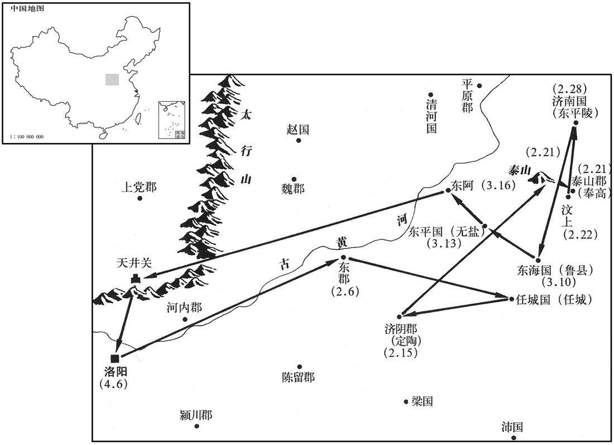
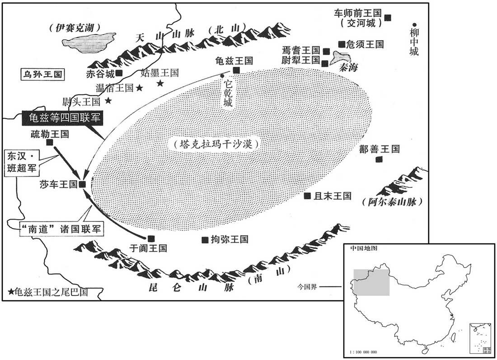
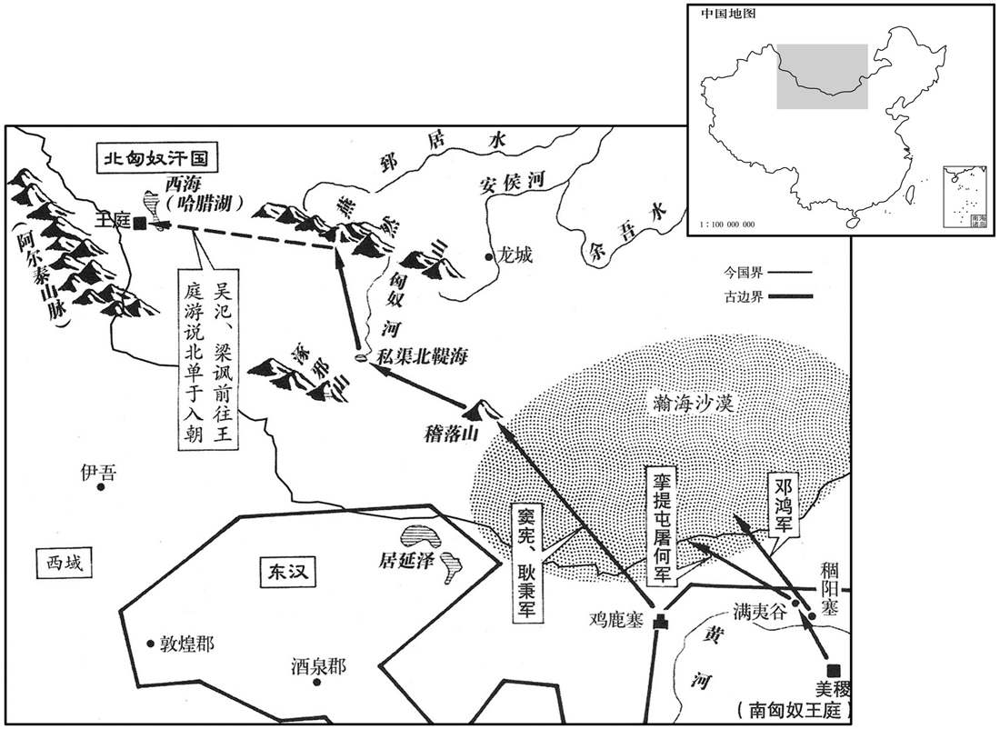
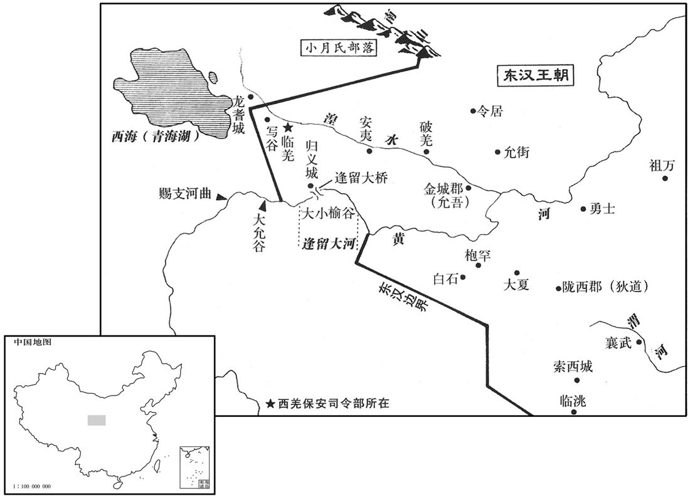
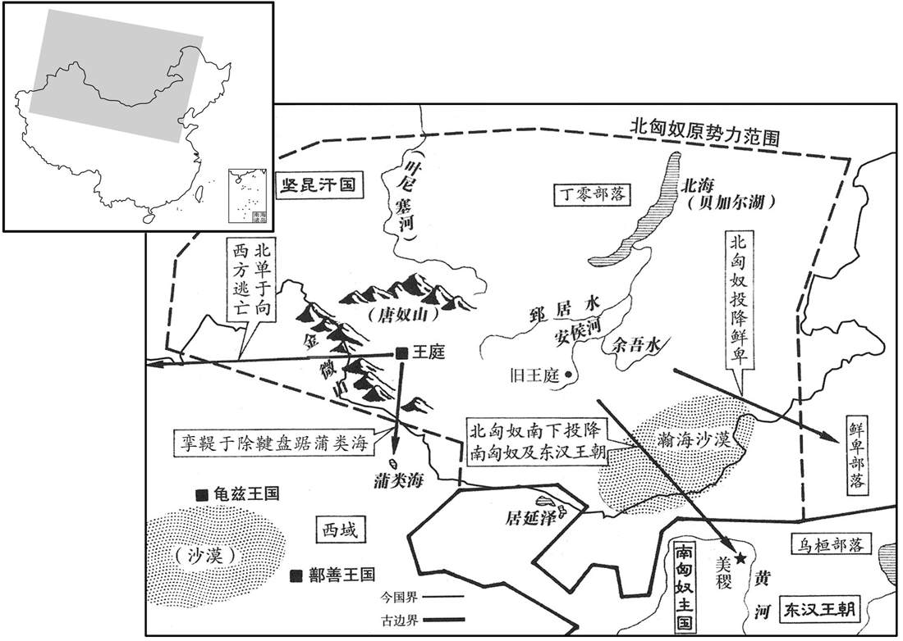
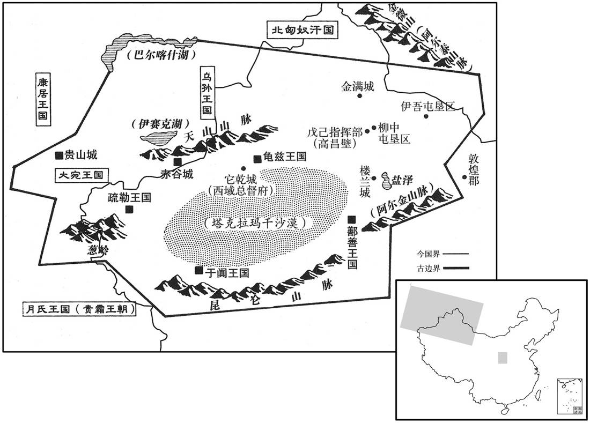

卷次与人物目录 / 卷47
资治通鉴 · 卷第四十七【汉纪三十九】
公元85年至公元91年 · 原文、白话与胡三省注
本页按胡注本编排保存全卷内容。白话采用本站所据译本，未可靠对应的内容另列说明；事件标题用于定位，并非原书文字。
本卷共77段原文，77段有译文对应，0段缺译或待核对。
卷第四十七【汉纪三十九】起旃蒙作噩（乙酉），尽重光单阏（辛卯），凡七年。
卷首原文与注释
肃宗孝章皇帝下
公元85年 · 汉肃宗孝章皇帝元和二年
元和二年〔（乙酉、八五）〕
上传原文的注释括号有异常，字符原样保留；无法可靠划分的段落默认全文显示。
本年事件索引（现代整理）
春，正月，乙酉，诏曰：「令云：『民有产子者，复勿算三岁。』〔复，方目翻；复其夫勿输算也。〕今诸怀怼者，〔贤曰：怼，孕也；音壬。〕赐胎养谷人三斛，复其夫勿算一岁。着以为令！」又诏三公曰：〔【章：甲十六行本「曰」下有「夫俗吏矫饰外貌，似是而非，朕甚餍之，甚苦之！」十八字；乙十一行本同；孔本同；张校同，「餍」作「厌」。】〕「安静之吏，悃愊无华，〔说文曰：悃愊，至诚也。悃，音苦本翻。愊，音孚逼翻。〕日计不足，月计有余。〔庄子有是言，此谓以日计功，若不足者，然久而计之，则民安其生，家给人足，固有余矣。〕如襄城令刘方，〔襄城县，属颍川郡。〕吏民同声谓之不烦，虽未有他异，斯亦殆近之矣！〔近，其靳翻。〕夫以苛为察，以刻为明，以轻为德，以重为威，四者或兴，则下有怨心。吾诏书数下，冠盖接道，冠盖接道，奉诏出使者相接于道也。数，所角翻。〕而吏不加治，民或失职，其咎安在﹖勉思旧令，称朕意焉！」〔旧令，谓故府之籍所疏载者。称，尺证翻。〕
春季，正月乙酉（初五），章帝下诏说：“法令规定：‘凡有百姓生育，免收人头税三年。’如今再作规定：所有怀孕的妇女，由官府赏赐胎养谷，每人三斛，免收其丈夫人头税一年。将此诏书定为法令！”又对三公下诏说：“踏实稳重的官吏，诚恳而无虚华，考察他每日的劳绩，好象不足，而考察他每月的劳绩，便绰绰有余了。例如襄城县令刘方，当地官民异口同声地说他为政从简，不烦扰百姓。他虽然没有其它特殊的表现，但这也接近了朕的要求了！如果以苛求为明察，以刻薄为智慧，以对过失从轻发落为德，从重惩处为威，一旦有了这四种观念，那么下面的人民就会心怀怨恨。朕曾不断地下诏，颁行诏书的使者车驾在路上前后相接，然而吏治不见好转，有些百姓仍然不守本份，毛病出在哪里？希望各位官员，努力牢记以往的法令，以称朕意！”
北匈奴大人车利涿兵等〔车，昌遮翻。〕亡来入塞，凡七十三辈。时北虏衰耗，党众离畔，南部攻其前，丁零寇其后，鲜卑击其左，西域侵其右，不复自立，〔复，扶又翻。〕乃远引而去。
北匈奴首领车利涿兵等叛逃，投奔到汉朝边塞，前后共有七十三批人。当时北匈奴力量衰弱，各部落纷纷离散反叛，南匈奴进攻它的南部地区，丁零进攻北部地区，鲜卑进攻东部地区，西域各国进攻西部地区。北匈奴四面受敌，不再能独立自保，便离开故地向远方迁移。
南单于长死，单于汗之子宣立，为伊屠于闾鞮单于。〔屠，直于翻。鞮，丁奚翻。〕
南匈奴单于长去世，前单于汗的儿子宣继位，此即伊屠於闾单于。
太初历施行百余年，历稍后天。〔谓七曜之行，在历家所推步躔次之前，晦朔弦望不合也。〕上命治历编欣、李梵等综校其状，〔治，直之翻。欣，音欣。梵，扶中翻。〕作四分历；〔考异曰：按王莽初已之废太初，用三统历。今云太初历失天益远，盖光武中兴，废莽历，复用太初也。续汉志又云：「自太初元年始用三统历。」按三统历刘歆所造，云太初元年始用。〕二月，甲寅，始施行之。
《太初历》已经实施了一百多年，渐与天象不合，略微向后延迟。章帝命令治历官编、李梵等整理校正误差，制定了《四分历》。本年二月甲寅（初四），开始实施这一新历法。
帝之为太子也，受尚书于东郡太守汝南张酺。〔续汉志：东郡，去雒阳八百余里。酺，薄乎翻。〕丙辰，帝东巡，幸东郡，引酺及门生并郡掾史并会庭中。〔东郡庭也。掾，俞绢翻。〕帝先备弟子之仪，使酺讲尚书一篇，然后修君臣之礼；赏赐殊特，莫不沾洽。行过任城，幸郑均舍，赐尚书禄以终其身，时人号为「白衣尚书」。〔先是，均事帝为尚书，数纳忠言，帝敬重之，谢病归任城，今禄以尚书。任，音壬。〕
章帝做太子的时候，曾师从现任东郡太守汝南人张学习《尚书》。二月丙辰（初六），章帝前往东方巡视，临幸东郡。章帝带领张及其学生，连同郡县官吏在郡府庭中集会，章帝先行弟子之礼，让张讲解《尚书》一篇，然后改行君臣之礼。章帝特别颁发赏赐，与会者无不满意欢喜。途经任城时，章帝临幸郑均家，赐给他尚书俸禄，享用终身。因平民穿白衣，所以当时人称郑均为“白衣尚书”。

乙丑，帝耕于定陶。辛未，幸泰山，柴告岱宗；〔书舜典：至于岱宗，柴。孔安国注曰：泰山为四岳所宗。燔柴祭天，告至。〕进幸奉高。壬申，宗祀五帝于汶上明堂；〔汶上明堂，武帝所作，在奉高县西南四里。汶，音问。〕丙子，赦天下。〔【章：甲十六行本「下」下有「戊寅」二字；乙十一行本同；孔本同；张校同；退斋校同。】〕进幸济南。〔济南国，在雒阳东千八百里。贤曰：济南故城，在淄州长山县西北。济，子礼翻。〕三月，己丑，幸鲁；庚寅，祠孔子于阙里，〔续汉志：鲁县古曲阜有阙里，孔子所居。〕及七十二弟子，〔自颜回以以下七十余人。〕作六代之乐，〔黄帝曰云门，尧曰咸池，舜曰大韶，禹曰大夏，汤曰大护，周曰大武。〕大会孔氏男子二十以上者六十二人。帝谓孔僖曰：「今日之会，宁于卿宗有光荣乎﹖」对曰：「臣闻明王圣主，莫不尊师遗道。今陛下亲屈万乘，辱临敝里，此乃崇礼先师，增辉圣德；〔先师，谓孔子。〕至于光荣，非所敢承！」帝大笑曰：「非圣者子孙焉有斯言乎！」〔焉，于虔翻。〕拜僖郎中。
二月乙丑（十五日），章帝在定陶举行耕藉之礼。二月辛未（二十一日），临幸泰山，燃柴祭告岱宗。继而前往奉高。二月壬申（二十二日），在汶上明堂祭祀五帝。二月丙子（二十六日），大赦天下。继而临幸济南。三月己丑（初十），临幸鲁。三月庚寅（十一日），在阙里祭祀孔子以及孔子的七十二位弟子，奏黄帝、尧、舜、禹、汤、周等六代古乐，并举行大会，召见孔家二十岁以上的男子共六十二人。章帝对孔僖说：“今天的大会，对你们家族是不是很荣耀？”孔僖回答道：“我听说，圣明的君王无不尊重师道。如今陛下以天子的身份亲自屈驾，光临我们卑微的乡里，这是崇敬先师，发扬君王的圣德。至于说荣耀，我们可不敢当！”章帝大笑，说道：“不是圣人的子孙，怎能说出这样的话！”于是将孔僖任命为郎中。
壬辰，帝幸东平，追念献王，谓其诸子曰：「思其人，至其乡；其处在，其人亡。」因泣下沾襟。遂幸献王陵，〔贤曰：陵在今郓州峗山南。峗，音鱼委翻。〕祠以太牢，亲拜祠坐，〔坐，徂卧翻。〕器泣尽哀。献王之归国也，〔事见四十二卷明帝永平四年。〕骠骑府吏丁牧、周栩以献王爱贤下士，不忍去之，遂为王家大夫数十年，事祖及孙。〔献王子怀王忠及今王敞。栩，况羽翻。下，遐稼翻。〕帝闻之，皆引见，〔见，贤遍翻。〕既愍其淹滞，且欲扬献王德美，即皆擢为议郎。乙未，幸东阿，北登太行山，至天井关。〔行，户刚翻。〕夏，四月，乙卯，还宫。庚申，假于祖祢。〔虞书：一岁巡四岳，归格于艺祖。孔安国注曰：巡狩四岳，然后归，告至文祖之庙。贤曰：假，至也，音格。祢，父庙。〕
三月壬辰（十三日），章帝临幸东平国，追念前东平王刘苍，对刘苍的儿子们说：“我想念他，来到他的故地，屋舍尚在，人已死亡！”说着，流下眼泪，沾湿衣襟。于是来到刘苍陵墓，命人用牛、羊、猪三牲设祭。章帝亲自在祠庙祭拜刘苍的牌位，尽情地哭泣。当年东平王刘苍从京城归国时，原骠骑将军府官员丁牧、周栩因刘苍礼贤下士，不忍离去，便留下来做了亲王府的家臣，至今已数十年，曾事奉刘苍祖孙三代。章帝听说后，召见丁、周二人，既怜惜他们久居下位，又要宣扬刘苍的美德，便将他们全都擢升为议郎。三月乙未（十六日），章帝临幸东阿，北行，登上太行山，到达天井关。夏季，四月乙卯（初六），返回京城皇宫。四月庚申（十一日），到宗庙祭告出巡经过。
五月，徙江陵王恭为六安王。〔恭封六安王，以庐江郡为国，在雒阳东一千七百里。〕
五月，章帝将江陵王刘恭改封为六安王。
秋，七月，庚子，诏曰：「春秋重三正，慎三微。〔贤曰：三正，谓天、地、人之正。以有三者，由有三微之月，王者所当奉而成之。礼记曰：正朔三而改，文质再而复。三微者，三正之始；万物皆微，物色不同，故王者取法焉。十一月时，阳气始施于黄泉之下，色皆赤；赤者阳气，故周为天正，色尚赤。十二月，万物始牙而色白，白者阴气，故殷为地正，色尚白。十三月，万物莩甲而出，其色皆黑，人得加功展业；故夏为人正，色尚黑。尚书大传曰：夏以十三月为正，平旦为朔；殷以十二月为正，鸡呜为朔；周以十一月为正，夜半为朔。必以三微之月为正者，当尔之时，物皆尚微，王者受命，当扶微理弱，奉承之义也。〕其定律无以十一月、十二月报囚，止用冬初十月而已。」
秋季，七月庚子（二十三日），章帝下诏说：“《春秋》重天、地、人‘三正’，而慎‘三微’，即‘三正’的开始。现制定法律：每年的十一月、十二月，不许判决罪人。只准在冬初十月判决罪人。”
冬，南单于遣兵与北虏温禺犊王战于涿邪山，斩获而还。武威太守孟云上言：「北虏以前既和亲，而南部复往抄掠，〔复，扶又翻。〕北单于谓汉欺之，谋欲犯塞，谓宜还南所掠生口以慰安其意。」诏百官议于朝堂。〔朝，直遥翻。〕太尉郑弘、司空第五伦以为不可许，司徒桓虞及太仆袁安以为当与之。弘因大言激厉虞曰：「诸言当还生口者，皆为不忠！」虞廷叱之，伦及大鸿胪韦彪皆作色变容。〔胪，陵如翻。〕司隶校尉举弘等，弘等皆上印绶谢。诏报曰：「久议沈滞，〔沈，持林翻。〕各有所志，盖事以议从，策由众定，誾誾衎衎，得礼之容，〔贤曰：誾誾，忠正貌。衎衎，和乐貌。誾，鱼巾翻。衎，音侃，又苦旦翻。〕寝嘿抑心，更非朝廷之福。〔寝，息也。〕君何尤而深谢！其各冠履！」帝乃下诏曰：「江海所以〔【章：甲十六行本「以」下有「能」字；乙十一行本同。】〕长百川者，以其下之也。〕老子曰：江海所以为百谷王者，以其善下也。长，知两翻。下，遐稼翻。〕少加屈下，尚何足病！况今与匈奴君臣分定，〔少，诗沼翻。分，扶问翻。〕辞顺约明，贡献累至，岂宜违信，自受其曲！其敕度辽及领中郎将庞奋倍雇南部所得生口以还北虏；〔领中郎将，领护匈奴中郎将也。贤曰：雇，赏报也。〕其南部斩首获生，计功受赏，如常科。」
冬季，南匈奴单于发兵，同北匈奴温禺犊王在涿邪山交战。南匈奴得胜，斩杀并俘虏北匈奴的人民和牲畜后返回。武威太守孟云上书说：“北匈奴先前已同汉朝和解，而南匈奴又去进行抢掠，北匈奴单于会说汉朝是在欺弄他，因而打算进犯边塞。我建议，应当让南匈奴归还抢来的俘虏和牲畜，以安抚北匈奴。”章帝下诏，命群臣在朝堂会商。太尉郑弘、司空第五伦认为不应归还，司徒桓虞和太仆袁安则认为应当归还。双方意见争执不下，郑弘因而大声激怒桓虞说：“凡是声称应当归还俘虏和牲畜的，都是不忠之人！”桓虞也在朝堂呵斥郑弘，第五伦和大鸿胪韦彪全都愤怒得变了脸色。于是司隶校尉上书弹劾郑弘等人，郑弘等人全都交上印信绶带谢罪。章帝下诏答复道：“问题反复讨论，迟迟不决，群臣们的意见，各不相同。大事需要集思广益，政策需由众人商定。忠诚、正直而和睦，这才符合朝廷之礼，而缄默不语压抑情志，更不是朝廷之福。你们有什么过失要谢罪？请各自戴上官帽，穿上鞋！”于是章帝便下诏决定：“江海所以成为百川的首领，是由于其地势低下。汉朝略受委屈，又有什么危害！何况如今在汉朝与北匈奴之间，君臣的名分已确定。北匈奴言辞恭顺而守约，不断进贡，难道我们应当违背信义，自陷于理亏的境地？现命令度辽将军兼中郎将庞奋，用加倍的价格赎买南匈奴所抢得的俘虏和牲畜，归还给北匈奴。而南匈奴曾杀敌擒虏，应当论功行赏，一如惯例。”
公元86年 · 汉肃宗孝章皇帝元和三年
三年〔（丙戌、八六）〕
本年事件索引（现代整理）
春，正月，丙申，帝北巡；辛丑，耕于怀；二月，乙丑，敕侍御史、司空曰：「方春所过，毋得有所伐杀；车可以引避，引避之，騑马可辍解，辍解之。」〔侍御史，掌举劾；司空，掌土功。车驾行幸，则侍御史掌举劾道路之不如法，司空帅工徒治道路，修桥梁，故皆敕之。贤曰：夹辕为服马，服马外为騑马。孔颖达曰：车有一辕，而四马驾之，中央两马夹辕者名服马，两边名騑马，亦曰骖马。騑，音非。〕戊辰，进幸中山，出长城；〔贤曰：史记，蒙恬为秦筑长城，西自临洮，东至海。余谓此非秦长城，盖赵所筑长城也。〕癸酉，还，幸元氏；三月，己卯，进幸赵；〔赵国，在雒阳北一千一百里。〕辛卯，还宫。
春季，正月丙申（二十二日），章帝到北方巡视。正月辛丑（二十七日），在怀县举行耕藉之礼。二月乙丑 （二十一日），训令侍御史、司空说：“如今正值春季，我所经过的地方，不得造成任何伤害。车辆可以绕行便绕行，驾车的边马能够解除便解除。”二月戊辰（二十四日），前往中山国，穿越长城。二月癸酉（二十九日），返回，临幸元氏县。三月己卯（初六），前往赵国。三月辛卯（十八日），返回京城皇宫。
太尉郑弘数陈侍中窦宪权势太盛，〔数，所角翻。〕言甚苦切，宪疾之。会弘奏宪党尚书张林、雒阳令杨光在官贪残。书奏，吏与光故旧，因以告之，光报宪。宪奏弘大臣，漏泄密事，帝诘让弘。〔诘，去吉翻。〕夏，四月，丙寅，收弘印绶。弘自诣廷尉，诏敕出之，因乞骸骨归，未许。病笃，上书陈谢曰：「窦宪奸恶，贯天达地，海内疑惑，贤愚疾恶，〔恶，乌路翻。〕谓『宪何术以迷主上！近日王氏之祸，然可见。』〔谓王氏以戚属而成篡国之祸。，立炳。〕陛下处天子之尊，〔处，昌吕翻。〕保万世之祚，而信谗佞之臣，不计存亡之机；臣虽命在晷刻，死不忘忠，愿陛下诛四凶之罪，以厌人鬼愤结之望！」〔厌，一艳翻；满也。考异曰：袁纪云：「弘为尚书仆射，乌孙王遣子入侍，上问弘：『当答其使否﹖』弘对曰：『乌孙前为大单于所攻，陛下使小单于往救之，尚未赏；今如答之，小单于不当怨乎！』上以弘议问侍中窦宪，对曰：『礼存往来。弘章句诸生，不达国体。』上遂答乌孙。小单于忿恚，攻金城郡，杀太守任昌。上谓弘曰：『朕前不从君议，果如此。』弘对曰：『窦宪，奸臣也，有少正卯之行，未被两观之诛，陛下前何为用其议！』按肃宗时无小单于寇金城事，今不取。〕帝省章，遣贤视弘病，比至，已薨。〔省，悉景翻。比，必寐翻。〕
太尉郑弘屡次上书，指出侍中窦宪的权势太盛，言辞极具苦心而恳切，窦宪对他十分怀恨。后来，当郑弘弹劾窦宪的党羽尚书张林和洛阳令杨光，说他们为官贪赃枉法而行为残暴的时候，奏书呈上，处理奏书的官吏却是杨光的旧交，此人便通知杨光，杨光又报告了窦宪。于是窦宪弹劾郑弘身为重臣，泄露机密。章帝因此责问郑弘。夏季，四月丙寅（二十三日），收回郑弘的印信绶带。郑弘亲自到廷尉投案待审，章帝下诏将他释放。于是他请求退休回乡，但未被批准。郑弘病重，上书谢恩说：“窦宪的奸恶，上通于天，下达于地，天下人疑惑不解，贤者愚者心怀憎恶，都说：‘窦宪用什么方法迷住了主上！近代王莽之祸，依然历历在目。’陛下居于天子的尊位，守护万世长存的帝业，却信任进谗献媚的奸臣，而不计较这是关系国家存亡的关键！我虽然命在顷刻之间，死而不忘效忠，愿陛下如舜帝除掉‘四凶’一样惩办奸臣之罪，以平息人与鬼神共同的愤恨！”章帝看到奏书后，派医生为郑弘诊病。当医生到达郑家的时候，郑弘已经去世。
以大司农宋由为太尉。
将大司农宋由任命为太尉。
司空第五伦以老病乞身；〔委身以事君，则身非我有，故于其老而乞退也，谓之乞身，犹言乞骸骨也。〕五月，丙子，赐策罢，以二千石俸终其身。伦奉公尽节，言事无所依违。〔若依若违，两可不决之论也。〕性质悫，少文采，〔少，诗沼翻。〕在位以贞白称。或问伦曰：「公有私乎﹖」对曰：「昔人有与吾千里马者，吾虽不受，每三公有所选举，心不能忘，亦〔【章：甲十六行本「亦」上有「而」字；乙十一行本同；孔本同；张校同。】〕终不用也。若是者，岂可谓无私乎！」
司空第五伦因年老患病请求退休。五月丙子（初三），章帝赐策书，将第五伦免官，赏给他二千石的终身俸禄。第五伦奉公尽节，发表政见时观点鲜明，从不模棱两可。他天性质朴诚实，少有文采，为官以清白著称。有人问第五伦说：“阁下有私心吗？”他回答道：“从前曾有人送我千里马，我虽未接受，但每当要三公举荐人才的时候，心中总不忘此事，只是最终也没有举荐这个人。像这样，难道能说没有私心吗？”
以太仆袁安为司安。
两版字句有差异，建议核对原文。
章帝将太仆袁安任命为司空。
秋，八月，乙丑，帝幸安邑，观盐池。〔安邑县，属河东郡；盐池在县西南。杨佺期洛阳记曰：河东盐池长七十里，广七里，水气紫色。许慎曰：河东盐池袤五十一里，广七里，周百一十六里。郦道元曰：安邑盐池，上承盐水，沝出东南薄山，西北流径巫咸山北，又径安邑故城南，又西流，注于盐池。水出石盐，自然即成，朝取夕复，终无减损。唯山暴雨，澍甘泽，淇潦奔逸，则盐池用耗；故公私共堨水径，防其淫滥，故谓之盐水，亦为堨水也。池西又有一池，谓之女盐泽，东西二十五里，南北二十里，在猗氏故城南。土人乡俗引水裂沃麻，分灌川野，畦水耗竭，土自成盐，即所谓咸鹾也，而味苦。贤曰：在今薄州虞乡县西。〕九月，还宫。
秋季，八月乙丑（二十四日），章帝临幸安邑，视察盐池。九月，返回京城皇宫。
烧当羌迷吾复与弟号吾及诸种反。〔复，扶又翻。种，章勇翻。〕号吾先轻入，寇陇西界，督烽掾李章追之，〔督烽掾，郡掾之督烽燧者。〕生得号吾，将诣郡。号吾曰：「独杀我，无损于羌；诚得生归，必悉罢兵，不复犯塞。」陇西太守张纡放遣之，羌即为解散，〔为，于伪翻。〕各归故地。迷吾退居河北归义城。〔河北，逢留大河之北也。归义城，本汉所筑，以招来诸羌之归义者。〕
羌人烧当部落首领迷吾又与弟弟号吾和其他部落起来造反。号吾率先轻装入侵，进犯陇西郡边界。督烽掾李章进行追击，将号吾生擒，押送到郡府。号吾说：“杀我一人，羌人并无损失，如果放我活着回去，我一定设法使羌军全部撤兵，不再侵犯边塞。”陇西太守张纡便将号吾放走，羌军果然随即被号吾解散，各自返回故地。迷吾退居到黄河以北的归义城。
疏勒王忠从康居王借兵，还据损中，〔忠叛见上卷元年。贤曰：损中，未详；东观记作「顿中」，续汉书及华峤书并作「损中」，本或作「桢」，未知孰是。余按西域传，灵帝建宁三年，凉州刺史孟佗，遣兵讨疏勒，攻桢中城。「桢中」是也。〕遣使诈降于班超；超知其奸而伪许之。忠从轻骑诣超，超斩之，因击破其众，南道遂通。
疏勒王忠向康居王借兵，回到损中据守，派使者向班超诈降。班超看穿他的诡计，假意应允。于是忠便带领轻装骑兵前来拜见班超，班超将他斩首，又乘机击败他的部众。西域南道从此畅通。
楚许太后薨。〔楚王英之徙也，许太后留楚宫。〕诏改葬楚王英，追爵谥曰楚厉侯。〔谥法：杀戮无辜曰厉。〕
楚国许太后去世。章帝下诏，改建楚王刘英之墓，将他追封为楚厉侯。
帝以颍川郭躬为廷尉。决狱断刑，〔断，丁乱翻。〕多依矜恕，条诸重文可从轻者四十一，奏之，事皆施行。
章帝将颖川人郭躬任命为廷尉。郭躬在审案判刑的时候，多采取宽大慎重的态度。他从关于判处重刑的律文中，找出四十一条可以从轻判处的，加以整理，上奏章帝。他的建议被一一采纳实施。
博士鲁国曹褒上疏，以为「宜定文制，着成汉礼。」太常巢堪〔巢姓，有巢氏之后，春秋有巢牛巨。〕以为「一世大典，非褒所定，〔言非褒所能定。〕不可许。」帝知诸儒拘挛，〔挛，吕员翻。〕难与图始，〔贤曰：拘挛，犹拘束也。〕朝廷礼宪，宜以时立，乃拜褒侍中。玄武司马班固以为「宜广集诸儒，共议得失。」〔百官志：玄武司马，主南宫玄武门，秩比千石。〕帝曰：「谚言：『作舍道边，三年不成。』会礼之家，名为聚讼，〔会礼，言会而议礼。贤曰：聚讼，言相争不定也。〕互生疑异，笔不得下。昔尧作大章，一夔足矣。」〔尧作乐曰大章。记曰：大章，章之也。贤曰：夔，尧乐官。吕氏春秋曰：鲁哀公问于孔子曰：乐正，夔一足矣。皇侃曰：章，明也。民乐尧德大明，故名乐曰大章。〕
博士鲁国人曹褒上书指出：“应当建立典章制度，编写汉朝礼仪大典。”太常巢堪认为：“这是一代大典，非曹褒这样地位的人所能制定，不可应许。”章帝知道儒生拘谨，难以一同创新，而朝廷的礼仪规章，却应当及时确立，于是就任命曹褒为侍中。玄武司马班固认为：“应当广招儒家各派学者，综合不同的意见，共同讨论。”章帝说：“俗话说：‘路边建房，三年不成。’众人会商讨论礼仪制度，就像在一起吵架，相互生出各种疑问和分歧，无法下笔。从前舜帝作《大章》时，有夔一人就足够了。
公元87年 · 汉肃宗孝章皇帝章和元年
章和元年〔（丁亥、八七）是年七月改元。〕
本年事件索引（现代整理）
春，正月，帝召褒，受〔【章：甲十六行本「受」作「授」；乙十一行本同。】〕以叔孙通汉仪十二篇，〔通制汉仪，见十卷高帝六年、七年，其书与律令同藏于理官。〕曰：「此制散略，多不合经，今宜依礼条正，使可施行。」
春季，正月，章帝召见曹褒，将叔孙通制定的《汉仪》十二篇交给他，说道：“这套制度松散精略，多与儒家经义不合，现在应当依据正规礼仪一一订正，使它能够颁布实施。”
护羌校尉傅育欲伐烧当羌，为其新降，〔为，于伪翻。〕不欲出兵，乃募人诸羌、胡；〔募人间构诸羌，使之自也。〕羌、胡不肯，遂复叛出塞，〔复，扶又翻。〕更依迷吾。育请发诸郡兵数万人共击羌。未及会，三月，育独进军。迷吾闻之，徙庐落去。〔庐，穹庐；落，居也。〕育遣精骑三千穷追之，夜，至三兜谷，〔三兜谷，在建威南。〕不设备，迷吾袭击，大破之，杀育及吏士八百八十人。及诸邵兵到，羌遂引去。诏以陇西太守张纡为校尉，将万人屯临羌。〔纡，邕俱翻。〕
护羌校尉傅育想要讨伐烧当羌人部落，但由于该部落新近投降，便不打算出兵，而收买内探去挑拨羌人与胡人的关系，使二者互相争斗。羌人和胡人看穿傅育的企图，不肯相斗，于是再次反叛出塞，重新依附了迷吾。傅育请求征调各郡郡兵数万人，一同进攻羌人。还没等各郡郡兵集结，本年三月，傅育率部单独出击。迷吾得到消息后，便和部众带着帐幕撤离。傅育派遣三千精锐骑兵穷追不舍。夜里，汉军抵达三兜谷，放松了戒备。迷吾乘机发动袭击，大败汉军，杀死傅育及其部下将士八百八十人。及至各郡郡兵到达，迷吾便率军离去。章帝下诏，将陇西太守张纡任命为护羌校尉，率领汉军万人屯驻临羌。
夏，六月，戊辰，司徒桓虞免。癸卯，以司空袁安为司徒，光禄勋任隗为司空。隗，光子之也。〔任，音壬。隗，五罪翻。〕
夏季，六月戊辰（初二），将司徒桓虞免官。六月癸卯（疑误），将司空袁安任命为司徒，将光禄勋任隗任命为司空。任隗是任光之子。
六王晃及弟利侯刚，〔班志，利县，属齐郡。晃，齐武王演之曾孙，殇王石之子。〕与母太姬更相诬告。〔更，工衡翻。〕秋，七月，癸卯，诏贬晃爵为芜湖侯，〔贤曰：芜湖，县名，属丹阳郡，其故城在今宣州当涂县东南。〕削刚户三千，收太姬玺绶。〔玺，斯氏翻。，绶，音受。〕
齐王刘晃和弟弟利侯刘刚，与他们的母亲太姬互相诬告。秋季，七月癸卯（初八），章帝下诏，将刘晃的爵位贬为芜湖侯，将刘刚的封地削减三千户，收回太姬的玺印绶带。
壬子，淮阳顷王薨。〔，明帝子。〕
七月壬子（十七日），淮阳顷王刘去世。
鲜卑入左地，〔匈奴左地也。〕击北匈奴，大破之，斩优留单于而还。〔还，从宣翻，又如字。〕
鲜卑部族进入北匈奴东部地区，并发动攻击，大败北匈奴，斩杀优留单于后返回故地。
羌豪迷吾复与诸种寇金城塞，〔复，扶又翻。种，章勇翻；下同。〕张纡遣从事河内司马防，〔百官志：使匈奴中郎将，置从事二人；护羌校尉盖亦置二人也。〕与战于木乘谷；迷吾兵败走，因译使欲降，纡纳之。迷吾将人众诣临羌，纡设兵大会，〔译，通夷言，使之将命，因谓之译使。设兵，陈兵也。使，疏吏翻。降，户江翻。〕施毒酒中，伏兵杀其酋豪八百余人，〔酋，慈由翻。〕斩迷吾头以祭傅育耱，复放兵击其余众，斩获数千人。迷吾子迷唐，与诸种解仇，结婚交质，〔质，音致。〕据大、小榆谷以叛，〔水经：河水径西海郡南，又东径允川西而历大榆谷、小榆谷北。二榆土地肥美，羌所依阻也。〕种众炽盛，张纡不能制。
羌人首领迷吾再次联合其他羌人部落进攻金城塞。张纡派从事河内人司马防在木乘谷迎战。迷吾战败退却，于是派翻译充当使者向汉军请降，被张纡接受。于是迷吾率领部众到临羌归附。张纡严阵以待，大张筵席，将毒药下在酒中，用伏兵杀死羌军首领八百余人，并斩下迷吾的人头，用来祭祀傅育的陵墓。他还发兵攻打迷吾的余部，斩杀俘获数千人。然而迷吾的儿子迷唐，与其他部落解除了仇怨，他们互相通婚，交换人质，据守在大、小榆谷反叛。这些人数量众多，实力强盛，张纡无法制服。
壬戌，诏以瑞物仍集，改元章和。〔章，明也，明和气之致祥也。〕是时，京师四方屡有嘉瑞，前后数百千，言事者咸以为美。而太尉掾平陵何敞独恶之，〔恶，乌路翻。杜佑曰：汉武帝割槐里置茂陵邑，昭帝又割置平陵邑。〕谓宋由、袁安曰：「夫瑞应依德而至，灾异缘政而生。今异乌翔于殿屋，怪草生于庭际，不可不察！」由、安惧不敢答。
七月壬戌（二十七日），章帝下诏，因祥瑞频出而数量众多，将年号改为“章和”。当时，京城和四方不断发现祥瑞，前后有千百次，谈论的人都认为是美事。然而太尉掾平陵人何敞却偏偏表示厌恶。他对太尉宋由、司徒袁安说：“祥瑞伴随恩德而来，灾异由于恶政而生。如今有奇特的鸟飞到皇家殿堂，怪异的草生在宫廷庭院，不可不小心注意！”宋、袁二人感到恐惧，不敢回答。
八月，癸酉，帝南巡。戊子，幸梁；乙未晦，未沛。〔梁、沛二国。〕
八月癸酉（初八），章帝到南方巡视。八月戊子（二十三日），临幸梁国。八月乙未晦（三十日），临幸沛国。
日有食之。
出现日食。
九月，庚子，帝幸彭城。辛亥，幸寿春；〔寿春县属九江郡。〕复封阜陵侯延为阜陵王。〔延贬事见上卷建初元年。〕己未，幸汝阴。〔汝阴县，属汝南郡。贤曰：今颍州县。〕冬，十月，丙子，还宫。
九月庚子（初五），章帝临幸彭城。九月辛亥（十六日），临幸寿春。将阜陵侯刘延重新封为阜陵王。九月己未（二十四日），临幸汝阴。冬季，十月丙子（十二日），返回京城皇宫。
曹褒依准旧典，杂以五经、谶记之文，撰次天子至于庶人冠、婚、吉、凶终始制度〔撰次制度，备其终始也。谶，楚谮翻。撰，雏免翻。冠，古玩翻。〕凡百五十篇，奏之。帝以众论难一，故但纳之，不复令有司平奏。〔平奏者，平其可行与否而奏之。复，扶又翻。〕
曹褒以旧典为基础，加入儒家《五经》和《谶记》上的记载，依次编写由皇帝到平民的成年加冠礼、婚嫁礼、祭祀礼、丧葬凶灾礼等仪程，共一百五十篇，奏报章帝。章帝认为众人的意见很难统一，所以就接受了曹褒制定的典章，不再命有关部门进行评议。
是岁，班超发于窴诸国兵共二万五千人击莎车，〔元和元年，超击莎车未克故也。窴，徒贤翻。莎，素禾翻。〕龟兹王发温宿、姑墨、尉头兵合五万人救之。〔龟兹，音丘慈。〕超召将校及于窴王议曰：〔将，即亮翻。校，户教翻。〕「今兵少不敌，其计莫若各散去；于窴从是而东，长史亦于此西归，〔班超时为将兵长史，盖西归疏勒也。〕可须夜鼓声而发。」〔须，待也。夜鼓声，鼓鼜之声也。周礼：军旅夜鼓鼜。注云：鼜，夜戒守鼓也。司马法曰：昏鼓四通为大鼜，夜半三通为晨戒，旦明五通为发昫，所谓三鼜也。此则待夜半鼓声也。鼜，千历翻。昫，休具翻，刘休武翻。〕阴缓所得生口。〔使生口得归，言将散去也。〕龟兹王闻之，大喜，自以万骑于西界遮超，温宿王将八千骑于东徼于窴。〔徼，一遥翻。〕超知二虏已出，密召诸部勒兵，〔【章：甲十六行本「兵」下有「鸡呜」二字；乙十一行本同；孔本同；张校同。】〕驰赴莎车营。胡大惊乱，奔走，追靳五千余级；莎车遂降，〔降，户江翻。〕龟兹等因各退散。自是威震西域。
本年，班超征调于阗等各国军队，共二万五千人，进攻莎车。龟兹王则征调温宿、姑墨、尉头三国军队，共五万人，前往救援。班超召集部下将校和于阗王商议道：“如今我方兵少，打不过敌人，不如各自分散撤离。于阗军队由此向东，长史也同时动身，从这里西行返回疏勒，可等到夜间鼓声起时出发。”然后假意放松戒备，让俘虏逃跑。龟兹王得知消息后大喜，亲自率领一万骑兵，到西面拦截班超。温宿王则率领八千骑兵，到东面拦截于阗军队。班超听说龟兹、温宿两国军队已经出动，就秘密集结部队备战，急速奔袭莎车军营。莎车人大为惊慌，乱作一团，四处奔逃，班超等追击斩杀五千余人，于是莎车投降。龟兹等国军队只好各自撤退散去。从此，班超的威名震动西域。

译本中未与胡注本可靠对应的内容
以下另列供核对版本差异，不并入胡注本正文。
译本所附古文
[12]北匈奴大乱，屈兰储等五十八部、口二十八万诣云中、五原、朔方、北地降。
译本白话
北匈奴发生大乱，屈兰储等五十八个部落、人口二十八万，到云中、五原、朔方、北地归降。
公元88年 · 汉肃宗孝章皇帝章和二年
二年〔（戊子、八八）〕
上传原文的注释括号有异常，字符原样保留；无法可靠划分的段落默认全文显示。
本年事件索引（现代整理）
春，正月，济南王康、阜陵王延、中山王焉来朝。上性宽仁，笃于亲亲，故叔父济南、中山二王，每数入朝，〔济，子礼翻。数，所角翻。朝，直遥翻。〕特加恩宠，及诸昆弟并留京师，不遣就国。〔汉制，诸藩王朝会之礼毕，各就国，不得留京师。〕又赏赐群臣，过于制度，仓帑为虚。〔帑，他朗翻。为，于伪翻。〕何敞奏记宋由曰：「比年水旱，民不收获；凉州缘边，家被凶害；〔贤曰：时西羌犯边为害也。比，毗玉翻。被，皮义翻。〕中州内郡，公私屈竭；此实损膳节用之时。国恩覆载，〔言恩同天地也。覆，敷救翻。〕赏赉过度，但闻腊赐，自郎官以上，公卿、王侯以下，至于空竭帑藏，〔藏，徂浪翻。〕损耗国资。寻公家之用，皆百姓之力。明君赐赉，宜有品制；忠臣受赏，亦应有度。〔贤曰：汉官仪：腊，赐大将军、三公钱各二十万，牛肉二百斤，粳米二百斛；特进侯十五万，卿十万，校尉五万，尚书三万，侍中、将、大夫各二万，千石、六百石各七千，虎贲、羽林郎二人，共三千，以为祀门户直。〕是以夏禹玄圭，〔书禹贡曰：禹锡玄圭。〕周公束帛。〔贤曰：尚书曰：召公出取币，入锡周公。〕今明公位尊任重，责深负大，上当匡正纲纪，下当济安元元，岂但空空无违而已哉！〔空，当作悾。悾悾，谨悫貌。〕宜先正己以率群下，还所得赐，因陈得失，奏王侯就国，除苑囿之禁，节省浮费，赈恤穷孤，则恩泽下畅，黎庶悦豫矣。」由不能用。〔考异曰：敞传，此事在肃宗崩后，云「窦氏专政，外戚奢侈，赏赐过制，敞奏记云云。」袁纪在元和三年。按敞记云：「明公视事，出入再翆」，又言腊赐，知在此时。〕
春季，正月，济南王刘康、阜陵王刘延、中山王刘焉来京城朝见。章帝天性宽厚仁爱，重视骨肉亲情。因此，每当叔父刘康和刘焉二位亲王进京朝见时，都受到特别的优待。章帝还将兄弟们全都留在京城，不派遣他们去封国就位。并大量赏赐百官，超过了制度规定，国库因此而空虚。何敞对宋由上书说：“如今年年发生水旱灾害，人民收不到粮食；凉州边境一带，居民遭到羌军的侵害；中原内地各郡，公私财力都已枯竭，这正是减少消费、节约用度的时机。皇恩如同天复地载，无与伦比，但陛下的赏赐超过了限度。听说仅在腊日，对郎官以上、公卿王侯以下官员的赏赐，就使国库一空，损耗了国家储备。追究公家的经费来源，都是出自百姓的血汗。贤明的君王进行赏赐，应当根据等级制度；忠臣接受赏赐，也应有一定的法规。因此尧帝赐给禹黑色的玉圭，而召公则赐给周公五匹帛。如今阁下地位尊贵而责任重大，对上应当匡正朝廷纲纪，对下应当安抚人民，难道只恭谨忠诚而不违上命就够了吗！您应当首先端正自身，做下官的表率，交还所得的赏赐；向皇上陈述利害得失，奏请遣送亲王侯爵各往封国就位；解除禁止人民在皇家园林耕种的法令，节省不必要的开支，赈济抚恤穷苦孤独的人，那么恩泽就会下达，百姓就会喜悦安乐。”宋由未能接受他的建议。
尚书南阳宋意上疏曰：「陛下至孝烝烝，〔烝，进也。烝烝，进进也。〕恩爱隆深，礼宠诸王，同之家人，车入殿门，〔汉制，太子诸王至司马门，皆下车，故谓止车门。〕即席不拜，〔臣于君前拜而后就席。〕分甘损膳，赏赐优渥。〔损御膳以分甘也。〕康、焉幸以支庶，享食大国，陛下恩宠踰制，礼敬过度。春秋之义，诸父、昆弟，无所不臣，〔君君臣臣，不以亲厌杀，天地之大经也，春秋尊王，故以为春秋之义。〕所以尊尊卑卑，强干弱枝者也。陛下德业隆盛，当为万世典法，不宜以私恩损上下之序，失君臣之正。又西平王羡等六王，皆妻子成家，〔谓有妻有子，自成一家世。〕官属备具，〔谓王国官已具也。〕当早就蕃国，为子孙基址；而室第相望，久盘京邑，〔贤曰：盘谓盘桓不去。〕骄奢僭拟，宠禄隆过。宜割情不忍，以义断恩，〔贤曰：礼记曰：门内之政恩掩义，门外之政义断恩。断，丁乱翻。〕发遣康、焉，各归蕃国，令羡等速就便时，以塞众望。」〔贤曰：行日取便利之时也。塞，悉则翻。〕帝未及遣。
尚书南阳人宋意上书说：“陛下大孝，皇恩深厚，宠爱诸王，亲情如同凡人之家。亲王们可以乘车进入殿门，就座时不叩拜，分享御膳房的饭食，获得优厚的赏赐。刘康和刘焉，有幸以旁支庶子的身份享有巨大的封国，陛下对他们的恩宠超过了常制，优礼尊敬超过了限度。根据《春秋》大义，对皇帝来说，伯父、叔父和兄弟，无不都是臣属，这是为了使尊者受到尊敬，卑者自守卑位，加强主干而削弱旁枝的缘故。陛下恩德伟业隆盛，当永为后世的典范，不应该由于亲情而破坏上下等级，失掉君臣间的正常秩序。此外，西平王刘羡等六位亲王，都已娶妻生子而自成一家，官属齐备，应当尽早去封国就位，为自己的子孙奠定基业。然而他们广修宅第，前后相望，长久地盘踞在京城，骄傲奢侈，超越本分，自比于居上位者；所得的恩宠和俸给，也都过度。陛下应当抛开亲情，不再容忍，以大义切断私恩，遣送刘康、刘焉各回封国，命刘羡等择日速往封国就位，以平息人们的怨言。”然而章帝已来不及遣送。
范晔论曰：魏文帝称明帝察察，章帝长者。章帝素知人，厌明帝苛切，事从宽厚；奉承明德太后，尽心孝道；平傜简赋，而民赖其庆；又体之以忠恕，文之以礼乐。谓之长者，不亦宜乎！
范晔论曰：魏文帝称明帝明辨洞察，而章帝则是忠厚之人。章帝一向通达人情，他不喜明帝的苛刻严厉，事事依从宽厚的原则；侍奉马太后，尽心地履行孝道；减轻徭役和赋税，使人民受到恩惠。并以忠恕之道为体，以礼乐教化为文。将他称为忠厚之人，不是很恰当吗？
壬辰，帝崩于章德前殿，年三十一。遗诏：「无起寝庙，一如先帝法制。」
正月壬辰（疑误），章帝在章德前殿驾崩。享年三十一岁。遗诏命令：“不要在墓地修建祠庙寝殿，一切依照先帝之制。”
太子即位，年十岁，尊皇后曰皇太后。
太子即位，时年十岁。将窦皇后尊称为皇太后。
三月，〔【章：甲十六行本「月」下有「丁酉」二字；乙十一行本同；孔本同。】〕用遗诏徙西平王羡为陈王，六安王恭为彭城王。〔改淮阳为陈国，楚郡为彭城国，平西并汝南郡，六安复为庐江郡。〕
三月，根据章帝遗诏，将西平王刘羡改封为陈王，将六安王刘恭改封为彭城王。
癸卯，葬孝章皇帝于敬陵。〔敬陵，在雒阳城东南三十九里。〕
三月癸卯（十一日），将章帝安葬于敬陵。
南单于宣死，单于长之弟屯屠何立，为休兰尸逐侯鞮单于。〔鞮，丁兮翻。〕
南匈奴单于宣去世，前单于长的弟弟屯屠何继位，此即休兰尸逐侯单于。
太后临朝，〔蔡邕独断曰：少帝即位，太后即代摄政，临前殿，朝群臣，太后东面，少帝西面。群臣上书奏事，皆为两通，一诣太后，一诣少帝。〕窦宪以侍中内干机密，〔贤曰：干，主也，或曰：干，古管字也。〕出宣诰命；弟笃为虎贲中郎将，笃弟景、緕并为中常侍，兄弟皆在亲要之地。宪客崔骃〔骃，音因。〕以书戒宪曰：「传曰：『生而富者骄，生而贵者帒。』传，直恋翻。帒，五到翻。〕生富贵而能不骄帒者，未之有也。今宠禄初隆，百僚观行，〔行，下孟翻。〕岂可不『庶几夙夜，以永终誉』乎！〔诗周颂振鹭之辞，言庶几于夙夜匪懈，以终保令名于有永也。〕昔冯野王以外戚居位，称为贤臣；〔冯野王妹为元帝昭仪，于九卿中，野王行能第一。〕近阴卫尉克己复礼，终受多福。〔阴卫尉，兴也，谓让侯爵，又让大司马也。〕外戚所以获讥于时，垂愆于后者，盖在满而不挹，位有余而仁不足也。汉兴以后，迄于哀、平，外家二十，保族全身，四人而已。〔外家二十者，吕氏、张氏、薄氏、窦氏、王氏、陈氏、卫氏、李氏、赵氏、上官氏、史氏、许氏、霍氏、卬成王氏、元后王氏、赵氏、傅氏、丁氏、冯氏、卫氏也。唯文帝薄太后、窦后、景帝王后、卬成王后四人，保族全家。武帝夫人李氏虽追配武帝，昌邑王立未几而废，非外家，当以史皇孙王夫人足二十之数。〕书曰：『鉴于有殷，』〔书召诰曰：我不可不鉴于有夏，亦不可不鉴于有殷。〕可不慎哉！」
窦太后临朝摄政，窦宪以侍中的身份，入宫主持机要，出宫宣布太后的命令。他的弟弟窦笃为虎贲中郎将，窦笃的弟弟窦景、窦同为中常侍。窦家兄弟全都在接近皇帝、皇后的显要位置上。窦宪的门客崔上书告诫窦宪说：“古书说：‘生来就富有的人骄横，生来就尊贵的人倨傲。’生于富有尊贵而能不骄横倨傲的人。未曾有过。如今您的恩宠和官位正开始上升，朝中百官都在观察您的所作所为，怎能不象《诗经·周颂》所说‘望能以终日的小心谨慎，求得终身的荣耀’呢！从前冯野王以外戚身份居于官位，被人称作贤臣；近代阴兴克己守礼，最终成为多福之人。外戚之所以被当时的人讥嘲，被后世的人责备，原因在于权势太盛而不知退让，官位太高而仁义不足。从汉朝建立以后，直到哀帝、平帝，皇后家族共计二十，而能保全家族和自身的，只有四位皇后。《尚书》说：‘以殷商的覆亡，作为鉴戒，’岂能不谨慎吗！”
庚戌，皇太后诏：「以故太尉邓彪为太傅，赐爵关内侯，录尚书事，百官总己以听。」窦宪以彪有义让，先帝所敬，〔彪父邯，封鄳乡侯，父卒，彪让国于弟凤；显宗高其节。〕而仁厚委随，〔贤曰：委随，犹顺从也。〕故尊崇之。其所施为，辄外令彪奏，内白太后，事无不从。〔王莽用孔光之故智也。〕彪在位，修身而已，不能有所匡正。宪性果急，睚滞〔【章：甲十六行本「滞」作「鈪」；乙十一行本同。】〕之怨，莫不报复。〔贤曰：睚，音语懈翻。滞「鈪」，音仕懈翻。广雅曰：睚，裂也。或谓：裂滞「鈪」，瞋目貌也。〕永平时，谒者韩纡考劾宪父勋狱，〔勋下狱死，事见四十五卷明帝永平五年。劾，户概翻。〕宪遂令客斩纡子，以首祭勋耱。
庚戌（十八日），窦太后下诏 ：“将前任太尉邓彪任命为太傅，赐爵为关内侯，主管尚书机要。百官各统己职，听命于太傅。”窦宪因邓彪仁义礼让，受到先帝的敬重，其为人又忠厚随和，所以把他捧上高位。窦宪要有所举动的时候，就在外面教邓彪奏报，自己到内宫向太后说明，无一事不被批准。邓彪身居太傅之位，只是修身自好而已，不能匡正朝廷纲纪。窦宪性情暴烈，连瞪他一眼的小怨恨，都无不报复。明帝永平年间，谒者韩纡曾审理过窦宪之父窦勋的案件，窦宪便命令门客斩杀韩纡的儿子，用人头祭祀窦勋之墓。
癸亥，陈王羡、彭城王恭、乐成王党、下邛王衍、梁王畅始就国。
癸亥（疑误），陈王刘羡、彭城王刘恭、乐成王刘党、下邳王刘衍、梁王刘畅开始前往封国就位。
夏，四月，戊寅，以遗诏罢郡国盐铁之禁，纵民煮铸。〔自武帝以来，盐铁有禁；光武中兴，收而未罢；今纵民得煮盐、铸铁。〕
夏季，四月戊寅（十七日），根据章帝遗诏，撤销各郡各封国盐铁专卖的规定，允许民间煮盐铸铁，自由经营。
北匈奴饥乱，降南部者岁数千人。〔降，户江翻；下同。〕秋，七月，南单于上言：「宜及北虏分争，出兵讨伐，破北成南，共〔【章：甲十六行本「共」作「并」；乙十一行本同；孔本同。】〕为一国，〔考异曰：袁纪：「章和元年十月，南单于上书，求出兵破北成南。宋意谏，不听，帅未出而帝寝疾。」范书南匈奴传，事并在此年七月。按单于书云：「孝章皇帝圣思远虑。」则范书是也。今从之。〕令汉家长无北念。〔谓北部既灭，南部保塞，则汉家无复北顾以为念也。〕臣等生长汉地，〔长，知两翻。〕开口仰食，〔仰，鱼向翻。〕岁时赏赐，动辄亿万，虽垂拱安枕，凓无报效之义，愿发国中及诸郡〔【章：甲十六行本「郡」作「部」；乙十一行本同；张校同。】〕故胡新降精兵，〔故胡，南部旧众也。新降，新从北部来降者。〕分道并出，期十二月同会虏地。臣兵众单少，不足以防内外，〔少，诗召翻。〕愿遣执金吾耿秉、度辽将军邓鸿及西河、云中、五原、朔方、上郡太守〔守，式又翻。〕并力而北，冀因圣帝威神，一举平定。臣国成败，要在今年，已敕诸部严兵马，唯裁哀省察！」〔省，悉景翻。〕太后以示耿秉。〔以南单于书示之也。〕秉上言：「昔武帝单极天下，〔单，与殚同。〕欲臣虏匈奴，未遇天时，事遂无成。〔谓不能使匈奴臣服也。〕今幸遭天授，北虏分争，以夷伐夷，〔谓以南部伐北部也。〕国家之利，宜可听许。」秉因自陈受恩，分当出命效用。〔分，扶问翻。〕太后议欲从之。尚书宋意上书曰：「夫戎狄简贱礼义，无有上下，强者为雄，弱即屈服。自汉兴以来，征伐数矣，〔数，所角翻。〕其所克获，曾不补害。光武皇帝躬服金革之难，深昭天地之明，因其来降，羁縻畜养，〔畜，许六翻。〕边民得生，劳役休息，于兹四十余年矣。〔建武二十四年受南单于降，至是四十一年。〕今鲜卑奉顺，斩获万数，〔谓破杀优留单于也。〕中国坐享大功而百姓不知其劳，汉兴功烈，于斯为盛。所以然者，夷虏相攻，无损汉兵者也。臣察鲜卑侵伐匈奴，正〔严：「正」改「止」。〕是利其抄掠；氶归功圣朝，实由贪得重赏。〔洞见鲜卑之情。抄，楚交翻。〕今若听南虏还都北庭，则不得不禁制鲜卑；鲜卑外失暴掠之愿，内无功劳之赏，豺狼贪婪，〔婪，卢含翻。方言：杀人而取其财曰婪。〕必为边患。今北虏西遁，请求和亲，宜因其归附，以为外扞，巍巍之业，无以过此。若引兵费赋，以顺南虏，则坐失上略，去安即危矣。诚不可许。」
北匈奴因饥荒而发生内乱，每年有数千人向南匈奴投降。秋季，七月，南匈奴单于上书朝廷：“应当趁着北匈奴内乱分裂的机会，派出军队进行讨伐，打败北匈奴，成全南匈奴，让南北匈奴统一成为整体，使汉朝永无北方之忧。我们长期生活在汉朝境内，仰仗汉朝，才能张口吃饭。汉朝每年四季给我们赏赐，动不动就达亿万之数。我们虽然无须操劳而安享太平，却因未能实行报效之义而感到惭愧。我们愿征调本部和分散在各郡的匈奴精锐，包括老兵和新近归降的北匈奴军队，分为几路，同时进发，约定十二月在北匈奴会师。我的部队力量单薄，不足以内外兼顾，请汉朝派遣执金吾耿秉、度辽将军邓鸿及西河、云中、五原、朔方、上郡等郡太守，合力北征。望能凭着圣上的神威，一举平定北方敌害。我匈奴国的成败，就在今年决定。我已命令各部厉兵秣马，准备作战。请陛下节哀审定。”窦太后把南单于的奏书给耿秉看，耿秉进言：“从前武帝耗尽天下之力，想使匈奴臣服，但时机未到，便没有成功。如今遇到天赐良机，北匈奴内部分裂争斗，我们让外族打外族，对国家有利，应当答应南匈奴的请求。”耿秉于是表示自己身受皇恩，应该出征效命。窦太后在商议时打算采纳他的意见。尚书宋意上书说：“匈奴人轻视礼仪，没有君臣上下之分。强悍者则称雄，弱小者便屈服。自从汉朝建立以来，讨伐他们的次数已很频繁了，但所得的收获，不能补偿国家的损失。光武皇帝亲身经历过战乱，显示天地间无与伦比的英明，乘匈奴人前来归降的机会，对他们采取了笼络豢养的政策。于是边疆人民获得生机，减除了劳役，至今已经四十余年了。现在鲜卑顺服汉朝，斩杀及俘虏北匈奴数万人，汉朝坐观成败，安享巨大成果，而百姓并不感到辛劳。汉朝建立以来的功业，这是最伟大的一项。所以如此，是因为异族相互攻伐，而汉军却全无损失。据我观察，鲜卑攻击北匈奴，是由于抢掠对他们有利；而将战功献给汉朝，实际上是贪图得到重赏。如今若是允许南匈奴回到北匈奴王庭建都，那就不得不限制鲜卑的行动。鲜卑外不能实现抢掠的愿望，内不能因功而得到赏赐，以其豺狼般的贪婪，必将成为边疆的祸患。现在北匈奴已经向西逃遁，请求与汉朝通好，应当乘他们归顺的机会，使之成为外藩。巍巍的功业，莫过于此。如果征调军队，消耗国家经费，以听从南匈奴的意愿，那就是平白丢掉了最佳策略，放弃安全，走向危亡。对南匈奴的请求，实在不可应许。”
会齐殇王子都乡侯畅来吊国忧，〔齐殇王石，齐武王演之孙，哀王章之子。考异曰：袁纪作「郁乡侯畅」，今从范书。〕太后数召见之，〔范书曰：畅素行邪僻，因邓迭母元自通长乐宫，得幸太后。数，所角翻。〕窦宪惧畅分宫省之权，遣客刺杀畅于屯卫之中，〔何敞传曰：刺杀畅于城门屯卫之中。刺，七亦翻。〕而归罪于畅弟利侯刚，乃使侍御史与青州刺史杂考刚等。〔青州刺史部齐国。畅见杀于京师，而令青州刺史考竟，欲移狱以绝踪也。〕尚书颍川韩棱以为「贼在京师，不宜舍近问远，恐为奸臣所笑。」太后怒，以切责棱，棱固执其议。何敞说宋由曰：〔说，输芮翻。〕「畅宗室肺府，〔府，与腑同。〕茅土蕃臣，来吊大忧，上书须报，〔贤曰：须，待也。〕亲在武卫，致此残酷。奉宪之吏，莫适讨捕，〔贤曰：适，音的；谓无指的讨捕也。〕踪迹不显，主名不立。敞备数股肱，职典贼曹，〔贤曰：股肱，谓手臂也，公府有贼曹，主知盗贼。余按字书，股，髀干；肱，臂干；股肱，言手足之要；以为手臂，误矣。〕欲亲至发所以纠其变。〔发所，贼发之所。纠，督察也。〕而二府执事，以为〔【章：甲十六行本「为」下有「故事」二字；乙十一行本同；孔本同；张校同；退斋校同。】〕三公不与贼盗，〔贤曰：敞在太尉府。二府：谓司徒、司空。邴吉为丞相不案事，遂以为故事。与，读曰预。〕公纵奸慝，莫以为咎。敞请独奏案之。」由乃许焉。二府闻敞行，皆遣主者随之。〔贤曰：主者，谓主知贼盗之曹也。〕于是推举，具得事实。太后奴，闭宪于内宫。宪惧诛，因自求击匈奴以赎死。
适逢齐殇王刘石的儿子都乡侯刘畅到京城来祭吊章帝。窦太后频繁地召见他。窦宪怕刘畅分去自己在内宫的权势，便派刺客在皇宫禁卫军中将刘畅暗杀，而归罪于刘畅的弟弟利侯刘刚。于是朝廷派侍御史和青州刺史一同审讯刘刚等人。尚书颍川人韩棱认为：“凶手就在京城，不应舍近求远。而现在的作法，怕要让奸臣讥笑。”太后大怒，严厉地责备韩棱，但韩棱仍然坚持自己的看法。何敞对太尉宋由说：“刘畅是皇室宗亲，封国藩臣，到京城来祭吊先帝，上书听候命令，身在武装卫士当中，却遭到这样的惨死。执法官吏盲目地追捕凶手，既不见凶手的踪影，也不知他们的姓名。我充数为您属下的要员，主管捕审罪犯，打算亲自到判案场所，以督察事态的进展。但司徒和司空二府的负责人认为，三公不应参与地方刑事案件，于是公然放纵奸恶，而并不认为是过错，因此我打算单独奏请，参与审案。”宋由便答应了何敞的请求。司徒、司空二府听说何敞将去参与审案，都派主管官员随同前往。于是清查案情，得到全部事实。窦太后知道真相后大怒，将窦宪禁闭在内宫。窦宪害怕被杀，就自己请求去打匈奴，以赎死罪。
冬，十月，乙亥，以宪为车骑将军，伐北匈奴，以报金吾耿秉为副；发北军五校、黎阳、雍营、缘边十二郡骑士及羌、胡兵出塞。〔北军五校，屯骑、越骑、步兵、长水、射声五校尉所掌宿卫兵也。黎阳营，注见前。扶风校尉部在雍县，以凉州近羌，数犯三辅，将兵卫护园陵，故俗称雍营。缘边十二郡，上郡、西河、五原、云中、定襄、鴈门、朔方、代郡、上谷、渔阳、安定、北地也。校，户教翻。雍，于用翻。〕
冬季，十月乙亥（十七日），任命窦宪为车骑将军，讨伐北匈奴。任命执金吾耿秉为副统帅，征调北军屯骑、越骑、步兵、长水、射声五校兵和黎阳营、雍营、边疆十二郡的骑兵，以及羌人、胡人部队，出塞征战。
公卿举故张掖太守邓训代张纡为护羌校尉。迷唐率兵万骑来至塞下，未敢攻训，先欲胁小月氏胡。〔匈奴破月氏，月氏西徙；其余众保南山不得去者，号小月氏。氏，音支。〕训拥卫小月氏胡，令不得战。议者咸以羌、胡相攻，县官之利，不宜禁护。训曰：「张纡失信，众羌大动，凉州吏民，命县丝发。〔县，读曰悬。〕原诸胡所以难得意者，皆恩信不厚耳。今因其追急，以德怀之，庶能有用。」遂令开城及所居园门，〔护羌校尉所居寺舍后园之门也。〕悉驱群胡妻子内之，严兵守卫。羌掠无所得，又不敢逼诸胡，因即解去。由是湟中诸胡皆言：「汉家常欲我曹；〔贤曰：湟中，月氏胡所居，今鄯州湟水县也。〕今邓使君待我以恩信，开门内我妻子，乃是得父母也！」咸欢喜叩头曰：「唯唐叔父号吾将其种人八百户来降。〔种，章勇翻。〕训因发湟中秦、胡、羌兵四千人出塞，〔秦威服四夷，故夷人率中国人为秦人。〕掩击迷唐于写谷，破之，〔贤曰：东观记曰：「写」作「鴈」。〕迷唐乃去大、小榆，〔大、小榆谷。杜佑曰：大、小榆谷在汉榆中县，今在兰州于泉县界。按水经：大、小榆谷在汉金城郡塞外。河水过大、小榆谷北又东过河关县北，又东过允吾县北，又东过榆中县北。榆中县，与大、小榆相去甚远；杜佑说非。〕居颇岩谷，众悉离散。
公卿推举前张掖太守邓训接替张纡任护羌校尉。烧当羌人部落首领迷唐率领一万骑兵，逼近边塞，但没有敢进攻邓训，而准备先胁迫小月氏胡人臣服。由于邓训的庇护，迷唐未能与小月氏胡人交战。议论此事的官员一致认为，羌人和胡人互相攻击，是对汉朝有利的事情，不应采取制止和庇护的策略。邓训说：“由于张纡失信，致使羌人各部落群起反叛，凉州官民的性命，就像悬在一根发丝上那样危险。推求胡人所以难与汉朝同心的原因，全都是因为我们的恩德信义不厚。现在乘胡人受到逼迫的机会，以恩德相待，希望将来能为我所用。”于是下令打开城门和他所居住的护羌校尉府后园大门，将胡人的妻子儿女全部驱赶接纳入内，派兵严密守卫。羌兵抢掠没有收获，又不敢对小月氏胡人各部落进行逼迫，便撤退离去。因此，湟中地区的胡人部族都说：“汉朝官吏总是要我们相斗，而如今邓使君却用恩德信义对待我们，开门收容我们的妻子儿女，我们如同得到了父母的庇护！”他们全都十分欢喜，向邓训叩头说：“我们一切听从您的命令！”邓训便进行安抚教化，胡人大小无不心悦诚服。于是邓训又悬赏招降羌族各部落，让已降的羌人引诱其他羌人前来归顺。迷唐的叔父号吾率领本部落羌人八百户前来依附汉朝。于是，邓训征调湟中地区的汉人、胡人、羌人部队四千人出塞，在写谷袭击迷唐，将他打败。于是迷唐撤离大、小榆谷，移居到颇岩谷，部众全部离散。
译本中未与胡注本可靠对应的内容
以下另列供核对版本差异，不并入胡注本正文。
译本所附古文
[11]五月，京师旱。
译本白话
五月，京城发生旱灾。
原书衔接
孝和皇帝上〔讳肇，肃宗第四子也。窦后养以为子，废长立之。谥法：不刚不柔曰和。伏侯古今注曰：「肇」之字曰「始」，音兆。贤曰：按许慎说文：肇，音大可翻；上讳也。但伏侯、许慎并汉时人，而帝讳音不同，盖应别有所据。〕
公元89年 · 汉孝和皇帝永元元年
永元元年〔（己丑、八九）〕
上传原文的注释括号有异常，字符原样保留；无法可靠划分的段落默认全文显示。
本年事件索引（现代整理）
春，迷唐欲复归故地；邓训发湟中六千人，令长史任尚将之，〔将，即亮翻。〕缝革为船，置于箄上以渡河，〔贤曰：箄，木筏也；音步佳翻。〕掩击迷唐，大破之，斩首前后一千八百余级，获生口二千人，马牛羊三万余头，一种殆尽。〔贤曰：一种，谓迷唐也。种，章勇翻。考异曰：西羌传：「永元元年，张纡坐征，以训代为校尉。」邓训传：「章和二年，纡诱诛羌，羌谋报怨，公卿举训代纡，击破之。其春，迷唐复欲归训，又破之。」按训传，下云「永元二年」，则其春，永元元年春也。今从训传。〕迷唐收其余众西徙千余里，诸附落小种皆畔之。〔附落，羌部落之附迷唐者。〕烧当豪帅东号，稽颡归死，〔归死，自归而请死也。帅，所类翻。〕余皆款塞纳-马恩省质。〔质，音致。〕于是训绥接归附，威信大行，遂罢屯兵，各令归郡，〔以羌反，发诸郡兵屯于塞上，今羌已破，罢令各归其郡。〕唯置弛刑徒二千余人，分以屯田、修理坞壁而已。
春季，迷唐打算重新回到故地。邓训在湟中征调六千士兵，命长史任尚率领，用皮革缝制小船，放在木筏上，作为渡河工具。汉军发动袭击，大败迷唐，先后斩杀一千八百余人，俘虏二千人，缴获马牛羊三万余头，迷唐的整个部落几乎全被消灭。迷唐收集残余的部众，向西迁移了一千余里，原来依附他的那些小部落全部叛变。烧当部落贵族东号前来归降，叩头请死。其余的贵族都将人质送到边塞投诚。于是邓训安抚接纳归顺的羌人，他的威望和信誉广为传播。由于边境安宁，便撤除驻军，命士兵各回本郡，只留下免刑囚徒二千余人，分别从事开荒垦田和修缮堡垒亭障而已。
窦宪将征匈奴，三公、九卿诣朝堂上书谏，以为：「匈奴不犯边塞，而无故劳师远涉，损费国用，徼功万里，〔徼，一遥翻。〕非社稷之计。」书连上，辄寝，〔上，时掌翻；下同。〕宋由惧，遂不敢复署议，〔复，扶又翻。〕而诸卿稍自引止；唯袁安、任隗守不移，至免冠朝堂固争，前后且十上，众皆为之危惧，〔为，于伪翻；下同。〕安、隗正色自若。侍御史鲁恭上疏曰：「国家新遭大忧，陛下方在谅闇，〔闇，音阴。〕百姓阙煞，三时不闻警跸之音，〔贤曰：三时，夏、秋、冬也。天子出警入跸。沈约曰：汉制曰：出称警，入称跸，而今则并称之。史臣以为警者，警戒也；跸者，止行也。今从乘舆而出者，并警戒以备非常也；从外而入，与乘舆相干者，跸而止之也。和帝章和二年二月即位，明年春议击匈奴，帝在谅闇不出，故三时不闻警跸之音。〕莫灴怀思皇皇，若有求而不得。〔礼记，颜丁善居丧，始死，皇皇如有求而不得。此言百姓思慕之意。〕今乃以盛春之月兴发军役，扰动天下以事戎夷，诚非所以垂恩中国，改元正时，由内及外也。万民者，天之所生；天爱其所，犹父母爱其子，一物有不得其所，则天气为之舛错，况于人乎！故爱民者必有天报。夫戎狄者，四方之异气，与鸟兽无别；〔别，彼列翻。〕若杂居中国，则错乱天气，污辱善人，〔污，乌故翻。〕是以圣王之制，羁縻不绝而已。〔字书曰：羁，马络头也。苍颉篇曰：縻，牛缰也。〕今匈奴为鲜卑所破，远藏于史侯河西，去塞数千里，而欲乘其虚耗，利其微弱，是非义之所出也。今始征发，而大司农调度不足，〔调，徒吊翻。贤曰：度，音大各翻。余据今人多读如本字。〕上下相迫，民间之急，亦已甚矣。群僚百姓咸曰不可，陛下〔【章：甲十六行本「下」下有「独」字；乙十一行本同；孔本同。】〕柰何以一人之计，弃万人之命，不恤其言乎！上观天心，下察人志，足以知事之得失。臣恐中国不为中国，岂徒匈奴而已哉！」尚书令韩棱、骑都尉朱晖、议郎京兆乐恢，皆上疏谏，太后不听。
窦宪将要出征讨伐匈奴。三公及九卿到朝堂上书劝阻，认为：“匈奴并未侵犯边塞，而我们却要无缘无故地劳师远行，消耗国家资财，求取万里以外的功勋，这不是为国家着想的策略。”奏书接连呈上，却都被搁置下来。太尉宋由感到恐惧，便不敢再在奏章上署名，九卿也逐渐自动停止劝谏。唯独司徒袁安、司空任隗严守正道，坚定不移，甚至脱去官帽在朝堂力争，先后上书约达十次。众人都为他们感到危险和恐惧，但袁、任二人却神情镇定，举止如常。侍御史鲁恭上书说：“我国新近有大忧，陛下正在守丧，百姓失去了先帝的庇护，夏、秋、冬三季听不到圣上出巡时禁卫军警戒喝道的声音，人们无不因思念而惶惶不安，如同有求而不能得。如今却在盛春之月征发兵役，为了远征匈奴而搅扰全国，这实在不符合恩待自己国家、改年号而变更朝代、由内及外地处理政务的原则。万民百姓，乃是上天所生。上天爱所生，犹如父母爱子女。天下万物中，只要有一物不能安适，那么天象就会为此发生错乱，何况对于人呢？因此，爱民的，上天必有回报。戎狄异族，如同四方的异气，与鸟兽没有分别，如果让他们混居在中原内地，就会扰乱天象，玷污良善之人。所以，圣明君王的作法，只是对他们采取不断笼络和约束的政策而已。如今北匈奴已被鲜卑打败，远远地躲藏到史侯河以西，距离汉朝边塞数千里，而我们打算乘他们空虚之机，利用他们的疲弱，这不是仁义的举动。现在刚刚开始征发，而物资已不能满足大司农的调度，上官下官互相逼迫，人民的困苦也已到了极点。群臣和百姓都说此事不可行，而陛下为什么只为窦宪一人打算，因而毁弃万人的性命，不体恤他们忧患的呼声呢！上观天心，下察民意，便足以明白事情的得失了。我担心中国将不再是真正的中国，岂只匈奴不把中国当中国看待而已！”尚书令韩棱、骑都尉朱晖、京兆人议郎乐恢，也都上书劝谏，但太后不听。
又诏使者为宪弟笃、景并起邸第，劳役百姓。〔为，于伪翻；下同。〕侍御史何敞上疏曰：「臣闻匈奴之为桀逆久矣，平城之围，〔事见十一卷高帝七年。〕慢书之耻，〔事见十二卷惠帝三年。〕此二辱者，臣子所为捐躯而必死，高祖、吕后忍怒含忿，舍而不诛。〔舍，读曰舍。〕今匈奴无逆节之罪，汉朝无可凓之耻，〔朝，直遥翻；下同。〕而盛春东作，〔贤曰：岁起于东，人始就耕，故曰东作。〕兴动大役，元元怨恨，咸怀不悦。又猥为卫尉笃、奉车都尉景缮修馆第，弥街绝里。笃、景亲近贵臣，当为百僚表仪。今众军在道，朝廷焦唇，百姓愁苦，县官无用，〔无财用也。〕而遽起大第，崇饰玩好，〔好，呼到翻。〕非所以垂令德、示无穷也。宜且罢工匠，专忧北边，恤民之困。」书奏，不省。〔省，悉景翻。〕
太后又下诏命令使者为窦宪的弟弟窦笃、窦景同时兴建宅第，役使百姓。侍御史何敞上书说：“我听说，匈奴凶暴叛逆由来已久。高祖在平城被围，吕后收到冒顿傲慢的书信，为了这两次侮辱，臣子一定要捐躯而死，但高祖和吕后却忍怒含忿，放过匈奴而未加惩处。如今北匈奴没有叛逆之罪，汉朝也没有值得羞惭的耻辱，而时值盛春时节，农民正在田中耕作，大规模地征发兵役，会使百姓产生怨恨。人人心怀不满。又为卫尉窦笃、奉车都尉窦景滥修宅第，屋舍占满了街巷。窦笃、窦景是陛下的亲近贵臣，应当成为百官的表率。现在远征大军已经上路，朝廷焦灼不安，百姓愁苦，国家财政空虚，而此时骤然兴建巨宅，重视和装饰喜好的东西，这不是发扬恩德、使后世永远仿效的作法。应当暂且停工，专心考虑北方边疆的战事，体恤人民的困难。”奏书呈上，未被理睬。
窦宪尝使门生赍书诣尚书仆射郅寿，有所请托，寿即送诏狱，前后上书，陈宪骄恣，引王莽以诫国家；又因朝会，刺讥宪等以伐匈奴、起第宅事，厉音正色，辞旨甚切。宪怒，陷寿以买公田、诽谤，下吏，当诛，〔下，遐稼翻。〕何敞上疏曰：「寿机密近臣，匡救为职，若怀默不言，其罪当诛。今寿违众正议以安宗庙，岂其私邪！臣所以触死瞽言，〔论语曰：侍于君子有三愆，未见颜色而言谓之瞽。〕非为寿也。忠臣尽节，以死为归；臣虽不知寿，度其甘心安之。〔度，徒洛翻。〕诚不欲圣朝行诽谤之诛，以伤晏晏之化，〔郑玄注尚书考灵曜曰：宽容覆载，谓之晏晏。〕杜塞忠直，〔塞，悉则翻。〕垂讥无穷。臣敞谬与机密，〔与，读曰预。〕言所不宜，罪名明白，当填牢狱，先寿僵仆，〔先，悉荐翻。〕万死有余。」书奏，寿得减死论，徙合浦，未行，自杀。寿，恽之子也。〔郅恽事光武。恽，于粉翻。〕
窦宪曾派他的门生带信去见尚书仆射郅寿，有私事请托，郅寿立即将该门生送到诏狱。他还屡次上书，指出窦宪的骄横，引用王莽的史事来告诫朝廷。又趁着上朝的机会，就讨伐匈奴和大肆兴建宅第之事抨击窦宪等人，厉声正色，辞意十分激切。窦宪大怒，反诬郅寿私买公田，诽谤朝廷。郅寿被交付官吏审讯，当处斩刑。何敞上书说：“郅寿是圣上身边参与机密的官员，纠正大臣的错误，是他的职责。如果他面对错误而沉默不语，就罪该处死。如今郅寿为了宗庙的平安而反对群臣，提出正确主张，这难道是为了个人吗？我所以冒死上言，并不是为了郅寿。忠臣尽节，视死如归，我虽不了解郅寿，但估计他会心甘情愿地安然赴死。我实在不希望圣明的朝廷会对诽谤罪进行诛杀，那将伤害宽厚的教化，堵塞忠诚正直之士的道路，永远被后人讥笑。我参与国家机密，却说出了这些不应由我说出的话，罪名十分清楚，该当入狱，先于郅寿被杀，卧尸在地，死有余辜。”奏书呈上，郅寿被判减死一等之刑，流放合浦。还没有动身，他便自杀了。郅寿是郅恽的儿子。
夏六月，窦宪、耿秉出朔方鸡鹿塞，〔贤曰：今在朔方窳浑县北。阚骃十三州志曰：窳县有大道，西北出鸡鹿塞。窳，音羊主翻。〕南单于出满夷谷，〔贤曰：满夷谷，阙。余按南单于庭在西河美稷，满夷谷当在美稷县西北。后邓鸿讨逢侯，兵至美稷，逢侯乘冰度隘，向满夷谷，可以知矣。〕度辽将军邓鸿出稒阳塞，〔贤曰：稒阳县，属九原郡，故城在今胜州银城县界。稒，音固。〕皆会涿邪山。宪分遣副校尉阎盘、司马耿夔、耿谭将南匈奴精骑万余，与北单于战于稽洛山，〔余按唐太宗以斛萨部地置稽落州，盖因山以名之。〕大破之，单于遁走；追击诸部，遂临私渠北鞮海，〔鞮，丁奚翻。〕斩名王已下万三千级，获生口甚众，杂畜百余万头，诸裨小王率众降者，前后八十一部二十余万人。宪、秉出塞三千余里，登燕然山，〔唐太宗又以多滥葛部地置燕然州。又按北史，燕然山在菟园水北。燕，于贤翻。〕命中护军班固刻石勒功，〔西都有护军都尉，今始有中护军。〕纪汉威德而还。〔还，从宜翻，又如字；下同。〕遣军司马吴泛、梁讽奉金帛遗北单于，〔遗，于季翻。〕时虏中乖乱，泛、讽及北单于于西海上，宜国威信，以诏致赐，单于稽首拜受。〔稽，音启。〕讽因说令修呼韩邪故事，〔谓臣服于汉为北藩。说，输芮翻。〕单于喜悦，即将其众与讽俱还；到私渠海，闻汉军已入塞，乃遣弟右温禺鞮王奉贡入侍，随讽诣阙。宪以单于不自身到，奏还其侍弟。
夏季，六月，窦宪、耿秉从朔方鸡鹿塞出发，南匈奴单于从满夷谷出发，度辽将军邓鸿从阳塞出发。三路大军预定在涿邪山会师。窦宪分别派遣副校尉阎盘、司马耿夔、耿谭，率领南匈奴一万余精锐骑兵，同北匈奴单于在稽洛山会战。大败北匈奴军，北匈奴单于逃走。汉军追击北匈奴各部落，于是到达了私渠北海，共斩杀大部落王以下一万三千人，生擒者甚多，还俘获了各种牲畜百余万头。由副王、小王率众前来投降的，先后有八十一部、二十余万人。窦宪、耿秉出塞三千余里，登上燕然山，命令中护军班固刻石建立功碑，记录汉朝的国威和恩德，然后班师。窦宪派军司马吴、梁讽带上金帛财物送给北匈奴单于。当时北匈奴内部大乱，吴、梁二人到西海之畔才追上单于，向他宣布汉朝的国威和信誉，并以皇帝的名义进行赏赐，单于叩首接受。于是梁讽向单于游说，让他效法呼韩邪单于的先例，做汉朝的藩属。单于欣然同意，立即率领部众同梁讽一道南归。抵达私渠海时，听说汉军已经入塞，单于便派他的弟弟右温禺王带着贡物去汉朝做人质，随梁讽一同入京朝见。窦宪因北匈奴单于没有亲自前来，便奏报窦太后，把单于派来充当人质的弟弟送回去了。

秋，七月，己未，会稽山崩。〔会，工外翻。〕
两版字句有差异，建议核对原文。
秋季，七月乙未（十一日），会稽发生山崩。
九月，庚申，以窦宪为大将军，中郎将刘尚为车骑将军，封宪武阳侯，〔郡国志，东郡有东武阳县，泰山郡有南武阳侯国。宪其封南阳欤！〕食邑二万户；宪固辞封爵，诏许之。旧，大将军位在公下，至是，诏宪位次太傅下、三公上；长史、司马秩中二千石。〔太傅位上公，则宪亦班于上公矣。大将军长史、司马秩千石；今秩中二千石，则亦比九卿矣。〕封耿秉为美阳侯。〔美阳县，属扶风。〕
九月庚申（初七），将窦宪任命为大将军，中郎将刘尚任命为车骑将军；并将窦宪封为武阳侯，享有二万户食邑。窦宪坚决推辞，不肯接受封爵，窦太后下诏准许。依照旧例，大将军的地位原在太尉、司徒、司空三公之下。至此，太后下诏规定：窦宪的地位在太傅以下，三公以上；大将军府的长史、司马的品秩为中二千石。将耿秉封为美阳侯。
窦氏兄弟骄纵，而执金吾景尤甚，奴客缇骑强夺人财货，篡取罪人，妻略妇女；〔贤曰：汉官仪，执金吾，缇骑二百人。说文曰：缇，丹黄色也。言奴客及缇骑并为纵横也。缇，杜兮翻，又他礼翻。〕商贾闭塞，〔贾，音古。塞，悉则翻。〕如避寇雠；又擅发缘边诸郡突骑有才力者。有司莫敢举奏，袁安劾景「擅发边民，〔【章：甲十六行本「民」作「兵」；乙十一行本同；张校同。】〕惊惑吏民；二千石不待符信〔符信，谓虎符以为信也。劾，户概翻，又户得翻；下同。〕而辄承景檄，当伏显诛。」又奏「司隶校尉河南尹阿附贵戚，不举劾，请免官案罪。」并寝不报。驸马都尉緕，独好经书，节约自修。〔緕，古回翻。好，呼到翻。〕
窦氏兄弟骄傲放纵，而执金吾窦景尤为突出。他的奴仆和部下骑士抢夺人民的财物，非法夺取罪犯，并奸淫掳掠妇女。商人们不敢出门经商，如同躲避敌寇。窦景还擅自征发边疆各郡骑兵部队的精锐，为己所用。有关部门无人胆敢举报。司徒袁安弹劾窦景：“擅自征发边疆人民，惊扰欺骗官吏百姓，边郡太守不等待调兵的符信，却即刻奉行窦景的檄书，应当处死示众。”他还上书说：“司隶校尉、河南尹阿谀攀附地位尊贵的外戚，不举报弹劾他们的不法情事，建议免官治罪。”这些奏书全部被搁置下来，得不到答复。窦家兄弟中，唯独驸马都尉窦喜好儒家经书，约束节制而修身自好。
尚书何敞上封事曰：「昔郑武姜之幸叔段，〔贤曰：郑武姜爱少子叔段。郑庄公立，武姜请以京封共叔段，谓之京城太叔。后武姜引以袭郑，庄公伐之，出奔共。〕卫庄公之宠州吁，〔贤曰：卫庄公宠庶子州吁，州吁好兵，公弗禁；石碏谏，不听。及桓公立，州吁乃弒桓公而篡。〕爱而不教，终至凶戾。由是观之，爱子若此，犹饥而食之以毒，〔食，读曰坔。〕适所以害之也。伏见大将军宪，治遭大忧，公卿比奏，〔贤曰：比，频也；音毗至翻。〕欲令典干国事；宪深执谦退，固辞盛位，恳恳勤勤，言之深至，天下闻之，莫不说喜。今踰年未几，〔说，读曰悦。几，居岂翻。〕入〔【章：甲十六行本「入」作「大」；乙十一行本同；孔本同；张校同。】〕礼未终，卒然�之鵅A〔礼，事君，方丧三年。时遭国忧纔踰年，故曰入礼未终，卒，读曰猝。〕兄弟守专朝，〔朝，直遥翻。〕宪秉三军之重，笃、景总宫卫之权，而虐用百姓，奢侈僭偪，诛戮无罪，肆心自快。今者论议莾莾，〔莾，许容翻，又许勇翻。〕咸谓叔段、州吁复生于汉。〔复，扶又翻。〕臣观公卿怀持两端，不肯极言者，以为宪等若有匪懈之志，则已受吉甫褒申伯之功；〔贤曰：申伯，周宣王元舅，有令德，故尹吉甫作诗以美之。〕如宪等陷于罪辜，则自取陈平、周勃顺吕后之权，〔事见高后纪。〕终不以宪等吉凶为忧也！〔此言曲尽当时廷臣之情，呜呼，岂特当时哉！〕臣敞区诚欲计策两安，绝其鼦鼦，塞其涓涓，〔周金人铭曰：涓涓不壅，终为江河；鼦鼦不绝，或成网罗。塞，悉则翻。涓，圭渊翻。〕上不欲令皇太损文母之号、陛下有誓泉之讥，〔诗曰：思齐太任，文王之母。左传武姜启叔段袭郑，庄公窴姜氏于城颍而誓之曰：不及黄泉，无相见也。〕下使宪等得长保其福佑也。驸马都尉緕，比请退身，愿抑家权，〔愿抑其家，不与之以权。比，毗至翻。〕可与参谋，听顺其意，〔汉之外戚，傅喜、窦緕、康咸能屐盛满而思谦挹，然终不能全其家门十分之一，盖一杯水不能救车薪之火也。诚宗庙至计，窦之福！」时济南王康尊贵骄，〔康，光武少子。〕宪乃白出敞为济南太傅。康有违失，敞辄谏争，〔争，侧迸翻。〕康虽不能从，然素敬重敞，无所嫌牾焉。〔悟，五故翻，逆也。〕
尚书何敞呈上密封奏书，书中写道：“从前，春秋时郑国太后武姜宠爱幼子叔段，卫国国君庄公宠爱庶子州吁，都是只宠爱而不管教，终使叔段和州吁成为凶恶暴戾之人。由此看来，像这样宠爱子弟，就好象在他们饥饿时喂给毒药，恰恰是害了他们。我看到大将军窦宪，在先帝驾崩后不久，公卿曾接连上奏，希望由他主持国家事务，但他严守谦恭退让的原则，坚决辞去高位，态度十分诚恳，言辞极为深挚。天下人听到以后，无不感到欣喜。现在一年过去没有多久，国丧尚未告终，窦宪却中途突然改变了态度。如今窦家兄弟都在朝廷专权，窦宪掌握全国的武装，窦笃、窦景统领宫廷禁卫部队。他们苛刻暴虐，役使百姓；生活奢侈，超过本来的身份；诛杀无罪之人，随心所欲而只求自己快意。如今人们议论纷纷，都说叔段和州吁在汉朝再次出现。据我观察，公卿所以采取骑墙态度，不肯直言，是为了这样的目的：如果窦宪等人有始终效忠朝廷的志节，那么他们自己就有周代吉甫褒扬申国国君的功劳；而如果窦宪等人陷于重罪，那么自己则只是采取了汉初陈平、周勃顺从吕后的权宜之计，到底不忧虑窦宪兄弟的命运吉凶！微臣何敞真诚地愿为朝廷和窦家筹划两全的方法，斩断灾难的绳索，堵塞祸患的涓流。上不愿使太后如周代文母的美誉受到损害，不愿陛下如郑庄公怨恨母亲那样发誓‘黄泉相见’而留下话柄；下使窦宪等人永远保有所获得的福分和庇佑。驸马都尉窦，曾多次请求从高位退下，希望抑制窦家的权势，陛下可以同他进行磋商，听取他的意见。这才确实是维护江山社稷的最佳策略，也是窦氏家族的福分！”当时济南王刘康地位尊贵而十分骄横，于是窦宪就告诉太后，让何敞离开京城，出任济南国太傅。每当刘康有失误的时候，何敞便进行劝谏。刘康虽然不能听从何敞的意见，但他一向敬重何敞，并没有什么嫌隙和冲突。
冬，十月，庚子，阜陵质王延薨。〔谥法：名实不爽曰质。〕
冬季，十月庚子（疑误），阜陵质王刘延去世。
译本中未与胡注本可靠对应的内容
以下另列供核对版本差异，不并入胡注本正文。
译本所附古文
[6]是岁，郡国九大水。
译本白话
本年，九个郡和封国发生水灾。
公元90年 · 汉孝和皇帝永二年
二年〔（庚寅、九○）〕
本年事件索引（现代整理）
春，正月，丁丑，赦天下。
春季，正月丁丑（二十六日），大赦天下。

本年形势与背景参考图
二月，壬午，日有食之。
二月壬午（初二），出现日食。
夏，五月，丙辰，封皇弟寿为济北王，开为河间王，淑为城阳王；〔济北、河间、城阳，皆汉旧国也。光武省济北并泰山，省河间并信都，省城阳并琅邪。今复泰山为济北国，在雒阳东千一百五十里；分乐成、涿郡、勃海为河间国，在雒阳北二千五百里；分琅邪为城阳国。济，子礼翻。〕绝封故淮南顷王子侧为常山王。〔章和元年，淮阳顷王薨，未及立嗣，而国有大丧，今乃绝封。〕
夏季，五月丙辰（初七），将皇弟刘寿封为济北王，皇弟刘开封为河间王，皇弟刘淑封为城阳王。将前淮南顷王的儿子刘侧封为常山王，继承其父刘。
窦宪遣副校尉阎砻将二千余骑掩击北匈奴之守伊吾者，复取其地。〔砻，卢红翻。复，扶又翻。考异曰：西域传作「阎盘」，今从帝纪。余谓副校尉阎盘，即前战于稽落山，恐当作「盘」。章：乙十一行本正作「盘」。西域传：章帝建初元年，罢伊吾屯田，北屯奴遣兵守其地，今复击取之。〕车师震慑，前、后王各遣子入侍。〔慑，之涉翻。〕
窦宪派副校尉阎砻率领骑兵二千余人袭击北匈奴在伊吾的守军，重新占领该地。车师深感震恐，前后王国的国王都分别派遣王子到汉朝充当人质。
月氏求尚公主，班超拒还其使，〔氏，音支。使，疏吏翻。〕由是怨恨，遣其副王谢将兵七万攻超。超众少，皆大恐；超譬军士曰：〔譬，喻也。少，诗沼翻。〕「月氏兵虽多，然数千里踰葱岭来，非有运输，何足忧邪！〔言粮尽自当降也。〕但当收谷坚守，彼饥穷自降，不过数十日决矣！」〔谓胜负决也。降，户江翻。〕谢遂前攻超，不下，又钞掠无所得。超度其粮将尽，〔钞，楚交翻。度，大各翻。〕必从龟兹求食，乃遣兵数百于东界要之。〔要，一遥翻。〕谢果遣骑赍金银珠玉以赂龟兹，超伏兵遮击，尽杀之，持其使首以示谢。谢大惊，即遣使请罪，愿得生归，超纵遣之。月氏由是大震，岁奉贡献。
月氏王求娶汉朝的公主。班超拒绝，并遣回月氏派来的使者。月氏王因此心怀怨恨，派副王谢率领七万大军进攻班超。班超兵少，众人都大为恐慌。班超告诉士兵们说：“月氏兵虽然多，但他们远从数千里之外翻越葱岭而来，没有运输补给，有什么值得忧虑呢！我们只要将粮食收割干净，据城固守，而敌方饥饿困顿，自会降服，不过数十天，便可以见分晓了！”谢领兵到达后，便前来进攻班超，不能取胜。又在城外抢掠，也没有收获。班超估计敌方的军粮快要吃完，一定会向龟兹求援，便派出数百伏兵在东方路上拦截。谢果然让人骑马带着金银珠玉去龟兹换取粮秣。班超的伏兵发动突袭，将他们全部杀死，斩下使者的人头送给谢看。谢大吃一惊，立即派人向班超请罪，希望放他们活着回去。班超便把他们放走了。月氏因此受到巨大震动，每年都向汉朝进贡。
初，北海哀王无后，〔章帝元和三年，北海哀王基薨，无后。〕肃宗以齐武王首创大业而后嗣废绝，心常愍之，遗诏饮复齐、北海二国。丁卯，封芜湖侯无忌为齐王，〔无忌，齐王晃子；章和元年，晃贬。〕北海敬王庶子威为北海王。〔北海敬王睦也。〕
当初，北海哀王刘基死后没有继承人。章帝因齐武王刘首创王朝大业而后嗣断绝，心中常常哀怜。他留下遗诏，命令恢复齐国和北海国两个封国。本年五月丁卯（十八日），和帝将芜湖侯刘无忌封为齐王，将前北海敬王刘睦的庶子刘威封为北海王。
六月，辛卯，中山简王焉薨。〔谥法：一德不懈曰简。〕焉，东海恭王之母弟，而窦太后，恭王之甥也；〔窦太后母沘阳公主，东海恭王强女也。〕故加赙钱一亿，〔赙，音附。〕大为修耱茔，〔为，于伪翻。〕平夷吏民耱墓以千数，作者万余人，凡征发摇动六州十八郡。
六月辛卯（十二日），中山简王刘焉去世。因刘焉是东海恭王刘强的同母弟，而窦太后是刘强的外孙女，因此赏赐丰厚，增加助丧钱一亿，为刘焉大修陵墓。在这项工程中，铲平的官民坟墓数以千计，使用的役夫达一万余人。因征发受到扰动的地区，共计六州十八郡。
诏封窦宪为冠军侯，笃为郾侯，緕为夏阳侯；〔冠军县，属南阳郡。郾县，属颍川郡。夏阳县，属冯翊郡。冠，古玩翻。夏，户雅翻。〕宪独不受封。
诏书宣布将窦宪封为冠军侯，将窦笃封为郾侯，将窦封为夏阳侯。唯独窦宪不肯接受赐封。
秋七月，乙卯，窦宪出屯凉州，〔凉州部陇西、汉阳、武都、金城、安定、北地、武威、张掖、敦煌、酒泉等郡。〕以侍中邓迭行征西将军事为副。
秋季，七月乙卯（初七），窦宪出京屯驻凉州。命侍中邓叠代理征西将军职务，充当副统帅。
北单于以汉还其侍弟，九月，复遣使款塞称臣，欲入朝见。〔复，扶又翻；下同。朝，直遥翻。见，贤遍翻。〕冬十月，窦宪遣班固、梁讽迎之。会南单于复上书求灭北庭，于是遣左谷蠡王师子等将左右部八千骑出鸡鹿塞，〔谷，音鹿。蠡，卢奚翻。〕中郎将耿谭遣从事将护之，〔耿谭为使匈奴中郎将。将，领也；护，监也。〕袭击北单于。夜至，围之，北单于被创，〔被，皮义翻。创，初良翻。〕仅而得免，获阏氏及男女五人，〔氏，音支；下同。〕斩首八千级，生虏数千口。班固至私渠海而还。是时，南部党众益盛，领户三万四千，胜兵五万。〔胜，音升。〕
北匈奴单于因汉朝遣回他送去做人质的弟弟，本年九月，再次派遣使者到边塞表示服臣，并请求入京朝见。冬季，十月，窦宪派班固、梁讽前往迎接。适逢南匈奴单于再度上书请求消灭北匈奴王庭，听到这个消息，他便派左谷蠡王师子等人率领左右两部八千骑兵出鸡鹿塞，由中郎将耿谭派遣的从事充当监军，袭击北匈奴单于。大军夜间到达，向北匈奴单于发动围攻。北匈奴单于受伤，仅得活命。南匈奴俘虏了北匈奴王后及其子女五人，斩首八千人，生擒数千人。班固等抵达私渠海后返回。此时，南匈奴的势力日益强盛，拥有人口三万四千户，兵员达五万人。
公元91年 · 汉孝和皇帝永三年
三年〔（辛卯、九一）〕
本年事件索引（现代整理）
春，正月，甲子，帝用曹褒新礼，加元服；〔礼仪志：正月甲子若丙子为吉日，可加元服，仪从冠礼，乘舆初缁布进贤，次爵弁，次武弁，次通天，以据，皆于高祖庙如礼谒。贤曰：元，首也；谓加冠于首。〕握褒监羽林左骑。〔百官志：羽林左监，秩六百石，主羽林骑，属光禄勋。褒监，古衔翻。〕
春季，正月甲子（十九日），和帝用曹褒制定的新礼仪，举行了成年加冠礼。擢升曹褒督领羽林左骑。
窦宪以北匈奴微弱，欲遂灭之，二月，遣左校尉耿夔、司马任尚出居延塞，围北单于于金微山，〔贤曰：居延县，属张掖郡；居延泽在东北。武帝使路博德筑遮虏障于居延北。余按唐太宗以仆固部置金微都督府。〕大破之，获其母阏氏，〔张：「氏」下脱「斩」字。〕名王已下五千余级，北单于逃走，不知所在。出塞五千余里而还，自汉出师所未尝至也。封夔为粟邑侯。〔贤曰：粟邑，县名，属左冯翊，故城在今同州白水县西北。〕
窦宪因北匈奴力量微弱，想趁势将它消灭。二月，他派遣左校尉耿夔、司马任尚出居延塞，在金微山包围了北匈奴单于。汉军大败北匈奴军队，俘虏了北匈奴单于之母阏氏，斩杀大部落王以下五千余人。北匈奴单于逃走，不知去向。汉军出塞五千余里后班师，其距离之远，是自汉朝出兵匈奴以来未曾达到过的。将耿夔封为粟邑侯。

窦宪既立大功，戌姳益盛，以耿夔、任尚等为爪牙，邓迭、郭璜为心腹，班固、傅毅之徒典文章，刺史、守、令，多出其门，赋〔【章：甲十六行本「赋」上有「竞」字；乙十一行本同；孔本同；张校同。】〕敛吏民，共为赂遗。〔敛，力赡翻。遗，于季翻。〕司徒袁安、司空任隗举奏诸二千石并所连及，贬秩免官〔【章：甲十六行本「官」下有「者」字；乙十一行本同；孔本同。】〕四十余人，窦氏大恨；但安、隗素行高，亦未有以害之。〔行，下孟翻。〕尚书仆射乐恢，刺举无所回避，宪等疾之。恢上书曰：「陛下富于春秋，〔贤曰：春秋，谓年也；言年少，春秋尚多，故称富。〕纂承大业，诸舅不直干正王室，以示天下之私。方今之宜，上以义自割，下以谦自引，四舅可长保爵土之荣，〔四舅，谓宪、笃、景、緕。〕皇太后永无凓负宗庙之忧，诚策之上者也。」书奏，不省。〔省，悉景翻。〕恢称疾乞骸骨，归长陵；〔恢，京兆长陵人。〕宪风厉州郡，迫胁恢饮药死。于是朝臣震慑，〔慑，之徙翻。〕望风承旨，无敢违者。袁安以天子幼弱，外戚擅权，每朝会进见〔见，贤遍翻。〕及与公卿言国家事，未尝不暗呜流涕；〔范书作「噫呜」。贤曰：噫，音医，又一戒翻；呜，一故翻；叹伤之貌也。〕自天子及大臣，皆恃赖之。
窦宪立下大功以后，威名越发显赫。他以耿夔、任尚等人为爪牙，邓叠、郭璜为心腹，用班固、傅毅之辈为他撰写文章。州刺史、郡太守和诸县县令，大多由窦氏举荐任命，这些人搜刮官吏百姓，一同进行贪污贿赂的勾当。司徒袁安、司空任隗弹劾了一批二千石官员，连同受牵连者，被贬官或免职的达四十余人。窦家兄弟对此十分怨恨，但由于袁安、任隗二人一向行为高尚，声望甚重，因此也没有加害于他们。尚书仆射乐恢，监察检举无所忌讳，窦宪等人对他很是厌恶。乐恢上书说：“陛下正年轻，继承了帝业，各位舅父不应控制中央大权，向天下显示私心。目前最好的办法是，在上位的人以大义自行割爱，在下位的人以谦让的态度主动引退。这样，四位国舅才可以长久保有封爵和国土的荣耀，皇太后才可以永远没有辜负宗庙的忧虑。确实这是最佳的良策。”奏书呈上，未被理睬。于是乐恢称病，上书请求退休，返回故乡长陵。窦宪暗中严令州郡官府，胁迫乐恢服毒而死。于是朝廷官员十分震恐，全都观望风色而逢迎窦宪的意思，无人胆敢违抗。袁安因和帝年幼单弱，外戚专权，每当朝会进见之际，以及与公卿谈论国家大事的时候，未曾不呜咽流泪。上自天子，下至大臣，全都依靠信赖袁安。
冬，十月，癸未，上行幸长安，诏求萧、曹近亲宜为嗣者，绝其封邑。
冬季，十月癸未（十二日），和帝出行，临幸长安，下诏在萧何、曹参的近亲中寻访适合做后嗣的人，继承萧、曹的封土。
本段人物：萧何
诏窦宪与车驾会长安。宪至，尚书以下议欲拜之，伏称万岁，尚书韩棱正色曰：「夫上交不谄，下交不渎；〔百官志：尚书左丞、右丞各一人，掌录文书期会，左丞主吏民章报及驺伯史，右丞假署印绶及纸笔墨诸财用库藏，秩皆四百石。蔡质汉仪曰：总典台中纲纪，无所不统。上，时掌翻。〕棱举奏龙，论为城旦。
两版字句有差异，建议核对原文。
和帝下诏，命令窦宪到长安会面。窦宪到达时，尚书下面的官员中有人提出要向窦宪叩拜，伏身口称“万岁”。尚书韩棱正色说道：“同上面的人交往，不可谄媚；同下面的人交往，不可轻慢。在礼仪上，没有对人臣称‘万岁’的制度！”倡议者都感到惭愧，因而作罢。尚书左丞王龙私自向窦宪上书，并奉献牛、酒，受到韩棱的弹劾。王龙被判处服苦役四年。
龟兹、姑墨、温宿诸国皆降。〔降，户江翻。〕十二月，复置西域都护骑都尉、戊己校尉官。〔章帝建初元年，罢西域都护及戊己校尉官，今复置。复，扶又翻。〕以班超为都护，徐干为长史。拜龟兹侍子白霸为龟兹王，遣司马姚光送之。超与光共胁龟兹，废其王尤利多而立白霸，使光将尤利多还诣京师。〔将，如字。〕超居龟兹它干城，徐干屯疏勒，惟焉耆、危须、尉犁以前没都护，〔事见四十五卷明帝永平十八年。〕犹怀二心，〔为班超诛焉耆、尉犁王张本。〕其余悉定。〔言其余国皆臣服于汉心。〕
龟兹、姑墨、温宿等国，都向汉朝投降。十二月，朝廷重新设置西域都护，骑都尉和戊校尉、己校尉。将班超任命为西域都护，徐干为长史。将龟兹送到汉朝做人质的王子白霸封为龟兹王，派司马姚光护送回国。班超和姚光共同胁迫龟兹，废掉国王尤利多而改立白霸，让姚光带着尤利多返回京城洛阳。班超的西域都护府设在龟兹的它乾城，徐干则驻扎疏勒。只有焉耆、危须、尉犁三国，因先前曾经杀死过汉朝的都护，所以仍旧怀着二心，而西域其它各国全都降服。

初，〔【章：甲十六行本「初」上有「庚辰，上至自长安」七字；乙十一行本同；孔本同；张校同；退斋校同。】〕北单于既亡，其弟右谷蠡王于除鞬自立为单于，〔鞬，九言翻。〕将众数千人止蒲类海，遣使款塞。窦宪请遣使立于除鞬为单于，置中郎将护，如南单于故事。事下公卿议，〔下，遐稼翻；下同。〕宋由等以为可许；袁安、任隗奏以为：「光武招怀南虏，非谓可永安内地，正以权时之算，可得扞御北狄故也。今朔漠已定，宜令南单于反其北庭，并领降众，〔降，户江翻；下同。〕无缘更立于除鞬以增国费。」事奏，未以时定。〔言其议虽已奏上，而上意从否未定也。〕安惧宪计遂行，乃独上封事曰：「南单于屯先父举众归德，〔屯，即屯屠何。〕自蒙恩以来四十余年，三帝积累以遗陛下，〔遗，于季翻。〕陛下深宜追述先志，成就其业。况屯首创大谋，空尽北虏，辍而弗图，而立新降；以一朝之计，违三世之规，失信于所养，建于无功。〔所养，谓南单于；无功，谓于除鞬。〕论语曰：『言忠信，行笃敬，虽蛮貊行焉。』〔孔子答子张之言。行，下孟翻。貊，莫北翻。〕今若失信于一屯，则百蛮不敢复保誓矣。〔誓，谓汉与夷人信誓之言。复，扶又翻。〕又，乌桓、鲜卑新杀北单于，〔谓章和元年，斩优留单于。〕凡人之情，咸畏仇雠，今立其弟，则二虏怀怨。且汉故事，供给南单于，费直岁一亿九十余万，西域岁七千四百八十万；今北庭弥远，其费过倍，是乃空尽天下而非建策之要也。」诏下其议，安又与宪更相难折。〔难，乃旦翻。折，之舌翻。〕宪险急负势，言辞骄讦，〔贤曰：讦，谓发人之恶，音居谒翻。〕至诋毁安，称光武诛韩歆、戴涉故事，〔韩歆死见四十三卷建武十五年。戴涉死见同卷二十年。〕安终不移，然上竟从宪策。〔考异曰：袁安传云：「宪请立左鹿蠡王阿佟为北单于，安以为不可，事竟立右鹿蠡王于除鞬。」据此，则阿佟与于除鞬是二人。袁纪作「阿修」，南匈奴传止有右谷蠡王于除鞬，无阿佟名。今从之。袁纪又云：「宋由、丁鸿、尹睦以为阿修诛君之子，又与乌丸、鲜卑为父兄之雠，不可立。南单于先帝所置，今首破北虏，新建大功，宜令并领降众。」与范书不同。又云「卒从安议」，盖误。今从袁安传。〕
起初，北匈奴单于不知去向以后，他的弟弟右谷蠡王于除便自称为单于，率领数千部众驻扎在蒲类海一带，派使者到汉朝边塞请求归附。窦宪建议派使者将于除立为单于，设置中郎将进行监护，如同对待南匈奴单于的先例。此事交付公卿进行商议。宋由等人认为可以批准窦宪的建议。袁安、任隗上奏表示反对。他们认为：“光武皇帝招抚南匈奴，并不是说可以让他们永远安居内地，而只是一种权宜之计，为的是能利用他们去抵御北匈奴。如今北方大漠已经平定，应当命令南匈奴单于返回他的北方王庭，统领归降部众。没有理由再另封于除做单于来增加国家的经费开支。”两种意见奏报后，一时决定不下。袁安担心窦宪的主张会被批准实行，便独自呈递密封奏书，奏书写道：“南匈奴单于屯屠何的先人曾率领部众归降，蒙受汉朝的大恩，至今已四十余年，历经三位汉帝经营而交到陛下手中。陛下应当深切地追思继承先帝的遗愿，完成他们的事业。况且屯屠何是首先提出北征重大方案的人，消灭北匈奴以后，我们停下来不再进取，却要另立一个新降服的北单于。为了一时的打算，违背三世以来的规划，失信于我们所养护的南匈奴单于，而去扶植无功的北匈奴单于。《论语》说：‘言辞忠诚而守信，行为敦厚而恭敬，即便在荒蛮之地也通行无阻。’如今要是失信于一个屯屠何，那么将有一百个蛮族不敢再相信汉朝的承诺了。再说乌桓、鲜卑新近斩杀了北匈奴优留单于，凡人之常情，全都忌惮仇人，现在扶植优留单于的弟弟，那么乌桓鲜卑就会心怀怨恨。况且依照汉朝旧制，供给南匈奴单于的费用，每年达一亿九十余万；供给西域的费用，每年七千四百八十万；如今北匈奴距离更远，费用超过一倍，这将耗尽国家的财富，不是制定政策的正确原则。”和帝下诏，命令将此奏章交付群臣讨论，袁安又与窦宪进一步争执，互相诘难。窦宪仗势凌人，言辞骄横，甚至诋毁袁安，提出光武帝诛杀韩歆、戴涉的旧事进行威胁，但袁安始终不动摇。然而和帝终于听从了窦宪的建议。
版本与范围
原文：司马光主编《资治通鉴》，胡三省注本。胡注与校勘以原书括注保留；史家评论按原书标识。
白话所据资料文件署名为本站所据白话资料。沿用来源文件的版本标识，未另作版本鉴定；未以生成译文补齐。
追叙、评论与原书衔接不改列到推测年份。同年跨卷的记事分别保留。阅读器仍提供模式、注释、字号、搜索及返回浏览位置等工具。